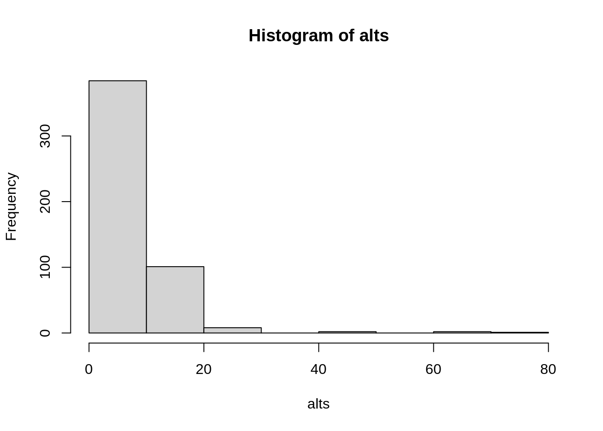
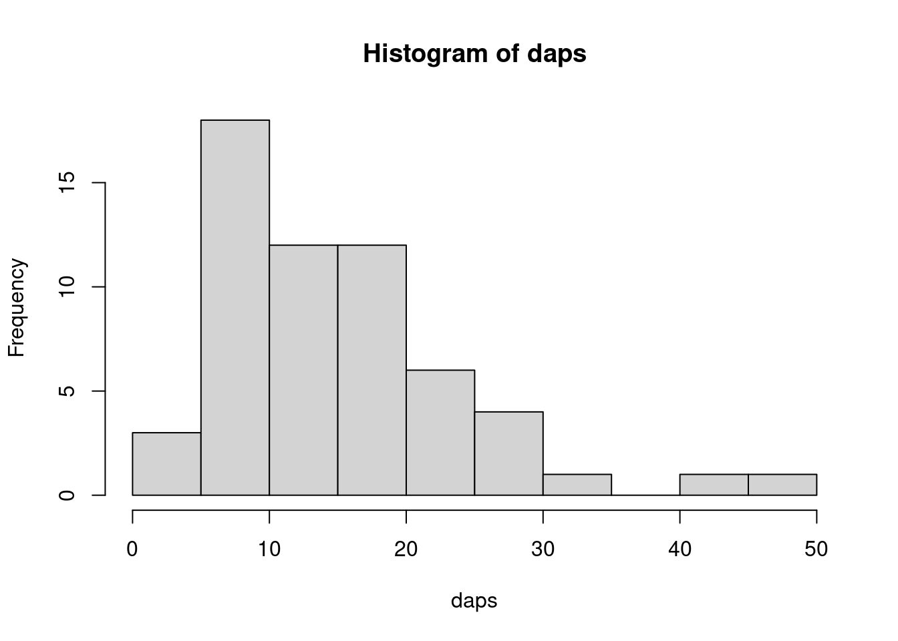

10 Extraindo dados de colunas descritivas
Na compilação de dados de especímenes botânicos, informações sobre a planta e o habitat estão em geral anotadas na forma de textos (notas), num formato pouco útil para entender os atributos dos organismos. Os scripts aqui relacionados mostram exemplos de como extrair informações dessas colunas descritivas, categorizando informações de habito, fertilidade, textura do solo, habitat, dap, altura.
10.1 Dados categóricos
A lógica básica é simples.
Para cada tipo de informação (variável), buscaremos por um conjunto de palavras e suas variantes, e substituiermos todas elas por uma única palavra, criando estados de variação (categorias).
É importante pensar na ordem em que a busca é feita, pois em algumas notas descritivas duas palavras podem ser encontradas e você quer apenas uma delas.
Por exemplo, na busca por hábito você deveria buscar a palavra epífita antes da palavra árvore, porque se a coleta for de uma planta epífita, a palavra árvore pode aparecer como hospedeiro.
Não precisa se preocupar com acentos nem se a palavra está em caixa alta ou baixa.
Criaremos uma função para ignorar isso nas comparações.
10.1.1 Passo 01 - Lista de referência
Você cria uma lista de referencia (veja a seção 10.2 para exemplos de listas de referência) para cada variável que quer buscar, composta de vetores com palavras ou parte de palavras a serem buscadas.
Cada vetor tem um nome, que é a palavra que define a categoria (estados de variação da variável).
A construção dessa lista deve ser baseada nas palavras que existem nos seus dados.
As listas de referência abaixo contêm alguns conjuntos de palavras que você pode ajustar para seu uso.
Vamos tomar como exemplo a variável hábito.
Teremos duas categorias que desejamos separar: arvoreta e árvore.
Vamos primeiro criar uma lista de referência usando a construção obj[[nome.da.categoria]] = c(palavras.a.buscar).
referencias <- list()
referencias[["arvoreta"]] <- c("arvoreta", "treelet", "arvore pequena", "arbolito", "small tree")
referencias[["árvore"]] <- c("arvore", "tree", "rvore", "arvo", "arbol", "avore")
referencias## $arvoreta
## [1] "arvoreta" "treelet" "arvore pequena" "arbolito"
## [5] "small tree"
##
## $árvore
## [1] "arvore" "tree" "rvore" "arvo" "arbol" "avore"Vejam que em nossa lista de referência referencias incluímos primeiramente arvoreta e depois árvore, porque árvore faz parte da palavra arvoreta, e nós desejamos diferenciar as duas categorias.
Note que erros de grafia e palavras em diferentes idiomas podem ser inseridos nesses vetores como palavras a serem buscadas.
10.1.2 Passo 02 - Funções que fazem a busca
Primeiro criaremos uma função removeacentos(), que pega um texto ou vetor de textos e remove acentos.
Isso é útil porque é frequente a mesma palavra aparecer com e sem acentos, por isso é melhor ignorar acentos nas comparações.
removeacentos <- function(x) {
# remove acentos
xx <- iconv(x, to = "ASCII//TRANSLIT")
xx <- gsub("[~|^|~|\"|'|`]", "", xx)
return(xx)
}E uma segunda função pegavalor()que usa a lista de referência para extrair os dados de um texto.
Nesta função, o argumento x é um vetor de classe character de comprimento igual a 1 contendo o texto original a ser explorado.
O segundo argumento da função, referencias, é uma lista de comprimento maior ou igual a 1 referente as categorias a serem buscadas no elemento x:
pegavalor <- function(x, referencias) {
acategoria <- NA # objeto onde armazena a categoria caso encontre em x
x <- x[!is.na(x)] # elimina elementos NA em x
x <- removeacentos(x)
if (length(x) == 1 & is.character(x)[1]) { # se x ainda for um texto
for (t in 1:length(referencias)) {
# se ainda não encontrou procura em outra referencia
if (is.na(acategoria)) {
words <- referencias[[t]] # pega as palavras a serem buscadas
words <- words[!is.na(words)] # limpa caso haja NAs
hab <- names(referencias)[t] # pega a categoria correspondente
if (!is.null(hab) & !is.na(hab) & length(words) >= 1) {
words <- removeacentos(words)
found <- 0
# para cada palavra chave busca em x e se encontrar anota
for (g in 1:length(words)) {
gp <- grep(words[g], x, ignore.case = T)
if (length(gp) > 0) {
found <- found + 1
}
}
# se encontrou, atribui
if (found > 0) {
acategoria <- hab
}
}
}
}
}
# retorna o resultado
return(acategoria)
}10.1.3 Passo 03 - Usando a função
Vamos utilizar dados de exemplo para testar a função. Baixe o arquivo presente neste endereço (https://github.com/LABOTAM/LABOTAM.github.io/blob/main/dados/pegados_dados_exemplo.csv). Ele apresenta uma coluna com notas de exsicatas para ilustrar nosso exemplo.
# voce já deve ter os seguinte objetos: pegavalor(), removeacentos(), referencias
# le o arquivo de exemplo
dados <- read.table(file = "pegados_dados_exemplo.csv", sep = "\t", as.is = TRUE, na.strings = c("NA", "NULL", ""), header = TRUE)txt.org <- dados$NOTAS_ORIGINAL # coluna com dados de notas (cada linha é um registro)
head(txt.org)## [1] "; HABITAT: Floresta Ombrófila Densa Submontana.; DESC: Árvore de 12m; frutos imaturos verdes. árvore de 12m; frutos imaturos verdes;HABITAT: Floresta Ombrófila Densa Submontana.; DESC: Árvore de 12m; frutos imaturos verdes."
## [2] "; Hábito: Árvore; Cor da flor: ; Cor do fruto: verdes árvore de 8 m de altura, frutos verdes. árvore de 8m altura, frutos verdes.;Árvore de 8 m de altura, frutos verdes."
## [3] "; Hábito: Árvore; Cor da flor: brancas (botoes brancos); Cor do fruto: árvore de 10 m de altura, botoes e flores brancos. árvore de 10 m de altura, botões e flores brancos. árvore de 10m de altura, botoes e flores brancos.;Árvore de 10 m de altura, botões e flores brancos."
## [4] "?muena?, 15m, fls. Yellow"
## [5] "[BARCODE = *MIRR 00705*]Tall terra firme forest with trees to 35m; Transecto de tatu, c. 4km from station.&nf;&nf;Tree, 20cm dbh.&nf;Vegetative ecological voucher."
## [6] "10m x 15cm DAP. Frutos imaturos verdes. 10m x 15cm dap. frutos imaturos verdes. ; de árvore de 10m x 15 cm dap, frutos imaturos verdes"habito <- sapply(txt.org, pegavalor, referencias = referencias)
table(habito) # o que estiver NA significa que ele não encontrou as palavras em referencias.| árvore | arvoreta |
|---|---|
| 542 | 113 |
10.2 Listas de referência
As listas de referência abaixo podem ser úteis e você pode acrescentar termos de busca a cada categoria.
A ordem das categorias na lista deve ser pensada de forma que minimize erros.
Por exemplo, é importante primeiro encontrar liana herbacea e apenas depois definir liana lenhosa porque muitas vezes aparece apenas a palavra ‘liana’ que se refere a plantas lenhosas quando não diferenciada.
O formato básico é:
lista[[“categoria a definir”]] = c(vetor com as palavras a serem encontradas que indiquem a categoria)
10.2.1 Hábito da planta
habito.refs <- list()
habito.refs[["liana herbácea"]] <- c("erva trepadeira", "trepadeira", "liana herbácea", "liana herbacea", "erva liana", "rastejante", "vine", "scandent vine", "erva liana")
habito.refs[["liana lenhosa"]] <- c("cipó", "liana", "liana sublenhosa", "liana lenhosa")
habito.refs[["hemiepífita"]] <- c("hemiepifita", "hemi-epifita", "hemiepiphyte", "hemi-epiphyte")
habito.refs[["epífita"]] <- c("epífita", "epiphyte")
habito.refs[["arvoreta"]] <- c("arvoreta", "treelet", "Trellet", "arvore pequena", "arbolito", "small tree")
habito.refs[["árvore"]] <- c("m de altura", "DAP:", "arvore", "tree", "rvore", "arvo", "arbol", "arbre", "Arbor", "Arv.", " DAP", "DBH ", " DBH", "DAP ", "D.A.P. ", "Árovore", "Arborea", "Ávore", "ÁRVIRE", "Arbóreo", "Tronco ", " PAP ", "Rrv.")
habito.refs[["arbusto"]] <- c("arbust", "shrub", "scrub", "subarbust", "arbust", "Shruv")
habito.refs[["hemiparasita"]] <- c("hemiparasit", "hemi-parasit")
habito.refs[["saprófita"]] <- c("saprofit", "saprophy")
habito.refs[["parasita"]] <- c("parasit")
habito.refs[["erva aquática"]] <- c("erva aquática", "erva aquatica", "Macrófita aquática", "macrofit", "macrophy", "aquatic herb")
habito.refs[["erva"]] <- c("erva", "herbace", "terrestre", "herbacia", "herb")10.2.2 Estado de fertilidade da amostra
fertilidade.refs <- list()
fertilidade.refs[["flores"]] <- c(" flor", " petal", " flôr", " pétala", " estigma", " sépal", " sepal", " bract", " flower", " bráctea", "sicônio", "siconio", " estgimas", " espadice", " espádice", " ovário", "ovario", " tépala", " antera", " estame", "tepala", "Pétal", "Tépal", "Sépal", "espata", "corolla", "anthers")
fertilidade.refs[["botões"]] <- c(" botão", " botões", " botao", " botao", " bud")
fertilidade.refs[["frutos"]] <- c(" fruto", " fruit", "futo", "f ruto", "frutescencia", "frutescenc", "frutescênc", " legume", " semente", " cupula", " cúpula")
fertilidade.refs[["estéril"]] <- c("Estéril", "Sterile")10.2.3 Classes de hábitat
habitat.refs <- list()
habitat.refs[["Floresta ciliar"]] <- c("Riverbank", "beria de rio", "beira de rio", "berra de rio", " ciliar", "galeria", "Gallery forest", "margem alta do igarap")
habitat.refs[["Floresta de igapó"]] <- c("igapo", "margin of black water igarapé")
habitat.refs[["Floresta Inundável"]] <- c("varzea", "flooded forest", "floresta indundavel", "periodicamente inundavel")
habitat.refs[["Campinarana"]] <- c("campinarana", "varillal", "chamisal", "wallaba", "curuni", "sandy soil", "Solo arenoso, dossel")
habitat.refs[["Campina"]] <- c("campina", "campinarana gramíneo lenhosa", "savannis areno")
habitat.refs[["Aquático"]] <- c("aquatic")
habitat.refs[["Vegetação secundária"]] <- c("Mata secundária", "Secondary forest", "capoeira", "Disturbed margin of road", "mata perturbada", "mata pertubada", "rea alterada", "beira de mata", "beira de estrada", "beira da estrada", "antropizada", "floresta secundária", "vegetação secundária")
habitat.refs[["Floresta de Baixio"]] <- c("Nomflooded moist forest", "baixio", "area encharcada", "encharcado", "Non-flooded moist forest", "Solo argiloso sujeito a inundação tempor")
habitat.refs[["Floresta de Vertente"]] <- c("vertente", "encosta", "slope", "Solo areno-argiloso")
habitat.refs[["Floresta de Platô"]] <- c("plato", "plateau")
habitat.refs[["Floresta de Terra Firme"]] <- c("Solo argiloso. Dossel", "Solo argiloso, dossel", "Mata de solo argiloso", "Upland hillside forest", "Upland forest", "Primary forest", "terra firme", "terra alta", "Terreno firme", "Floresta", "Mata primaria", "Mata de terra", "Terreno argiloso", "Mature forest")
habitat.refs[["Cerradão"]] <- c("cerradao")
habitat.refs[["Cerrado"]] <- c("cerrado", "savanna", "savana")
habitat.refs[["Campo rupestre"]] <- c("Campo rupestre")10.2.4 Textura do solo
solo.refs <- list()
solo.refs[["pedregoso"]] <- c("pedregos", "pedral", "rock")
solo.refs[["areno-argiloso"]] <- c("areno-argilos", "areno argilos", "arenoso-argiloso", "arenoso argiloso", "argilo-arenoso", "argilo arenoso", "areno-arcill")
solo.refs[["argiloso"]] <- c("argilos", "agilos", "clay", "clayish", " loam", " arcill")
solo.refs[["arenoso"]] <- c("arenoso", "aenoso", "areia branca", "sand", "arrenoso")
solo.refs[["siltoso"]] <- c(" silte", " silt")10.3 Extraindo altura e dap
Funções para extrair altura e diâmetro à altura do peito (DAP) de colunas descritivas.
10.3.1 Altura
pegaaltura <- function(x) {
x <- gsub("\\+/-", "", x)
x <- gsub(" ", " ", x)
x <- gsub(" ", " ", x)
# print(x)
pt1 <- "[-+]?[0-9]*[,.]?[0-9] m x"
pt2 <- "[-+]?[0-9]*[,.]?[0-9]m x"
pt3 <- "[-+]?[0-9]*[,.]?[0-9] m\\. x"
pt4 <- "[-+]?[0-9]*[,.]?[0-9] m de altura"
pt5 <- "[-+]?[0-9]*[,.]?[0-9] m\\. de altura"
pt6 <- "[-+]?[0-9]*[,.]?[0-9]m d ealtura"
pt7 <- "[-+]?[0-9]*[,.]?[0-9]m de alto"
pt8 <- "[-+]?[0-9]*[,.]?[0-9] m de alto"
pt9 <- "[-+]?[0-9]*[,.]?[0-9]m alto"
pt10 <- "[-+]?[0-9]*[,.]?[0-9]m de altura"
pt11 <- "[-+]?[0-9]*[,.]?[0-9] m tall"
pt12 <- "[-+]?[0-9]*[,.]?[0-9]m tall"
pt13 <- "[-+]?[0-9]*[,.]?[0-9] m\\. tall"
pt14 <- "[-+]?[0-9]*[,.]?[0-9] m\\. Tall"
pt15 <- "[-+]?[0-9]*[,.]?[0-9]m\\. tall"
pt16 <- "Tree, [-+]?[0-9]*[,.]?[0-9]m"
pt17 <- "Tree, [-+]?[0-9]*[,.]?[0-9] m"
pt18 <- "Tree [-+]?[0-9]*[,.]?[0-9] m"
pt19 <- "Tree [-+]?[0-9]*[,.]?[0-9]m"
pt20 <- "to [-+]?[0-9]*v?[0-9] m"
pt21 <- "Tree [0-9]*-[0-9]*m"
pt22 <- "de [-+]?[0-9]*[,.]?[0-9] m"
pt23 <- "de [-+]?[0-9]*v?[0-9]m"
pt24 <- "de [0-9]*-[0-9]* m"
pt25 <- "Tree [0-9]*-[0-9]* m"
pt26 <- "de [0-9]*-[0-9]*m"
pt27 <- "alt. [-+]?[0-9]*[,.]?[0-9] m"
pt28 <- "[-+]?[0-9]*[,.]?[0-9] feet high"
pt29 <- "[-+]?[0-9]*[,.]?[0-9] ft. high"
pt30 <- "rvore [-+]?[0-9]*[,.]?[0-9]m"
pt31 <- "rvore [-+]?[0-9]*[,.]?[0-9] m"
pt32 <- "rvore, [-+]?[0-9]*[,.]?[0-9] m"
pt33 <- "rvore, [-+]?[0-9]*[,.]?[0-9]m"
pt34 <- "rbusto [-+]?[0-9]*[,.]?[0-9]m"
pt35 <- "rbusto [-+]?[0-9]*[,.]?[0-9] m"
pt36 <- "rbusto, [-+]?[0-9]*[,.]?[0-9] m"
pt37 <- "rbusto, [-+]?[0-9]*[,.].?[0-9]m"
pt38 <- "rvore +/- [-+]?[0-9]*[,.].?[0-9]m"
pt39 <- "rvore ca. [-+]?[0-9]*[,.].?[0-9]m"
pt40 <- "de [-+]?[0-9]*[,.].?[0-9] de altura"
pt41 <- "altura [-+]?[0-9]*[,.].?[0-9]m"
pt42 <- "altura [-+]?[0-9]*[,.].?[0-9] m"
pt43 <- "of [-+]?[0-9]*[,.].?[0-9]m"
pt44 <- "to [-+]?[0-9]*[,.].?[0-9]m"
pt45 <- "Treelet [-+]?[0-9]*[,.].?[0-9]m"
pt46 <- "rvore [-+]?[0-9]*[,.].?[0-9] m"
pt47 <- "rvore, [-+]?[0-9]*[,.].?[0-9] m"
pt48 <- "rvoreta, [-+]?[0-9]*[,.].?[0-9] m"
pt49 <- "Fuste= [-+]?[0-9]*[,.].?[0-9] m"
pt50 <- "Fuste= [-+]?[0-9]*[,.].?[0-9]m"
pt51 <- "com [-+]?[0-9]*[,.].?[0-9] m. alt."
pt52 <- "Height: [-+]?[0-9]*[,.].?[0-9] m"
pt53 <- "Arbol [-+]?[0-9]*[,.].?[0-9]m"
pt54 <- "Treelet, [-+]?[0-9]*[,.].?[0-9]m"
pt55 <- "altura = [-+]?[0-9]*[,.].?[0-9]m"
pt56 <- "Fuste = [-+]?[0-9]*[,.].?[0-9]m"
pt57 <- "Fuste = [-+]?[0-9]*[,.].?[0-9] m"
altura <- NA
for (p in 1:57) {
pt <- get(paste("pt", p, sep = ""))
gp <- grep(pt, x, ignore.case = F)
if (length(gp) > 0 & is.na(altura)) {
# print(p)
rmm <- strsplit(x, pt)[[1]]
rmm <- rmm[rmm != "" & rmm != "." & !is.na(rmm)]
xx <- x
if (length(rmm) > 0) {
for (r in length(rmm):1) {
xx <- gsub(rmm[r], "", xx, fixed = T, useBytes = T)
}
}
xx <- trimws(gsub("[A-Z]|\\(|\\)|:|=", "", xx, ignore.case = T), which = "both")
xx <- gsub(",", ".", xx)
tt <- grep("-", xx)
if (length(tt) > 0) {
xxx <- strsplit(xx, "-")[[1]]
xxx <- xxx[xxx != ""]
xxx <- gsub(" \\.", "", xxx)
xx <- mean(as.numeric(trimws(xxx, which = "both")), na.rm = T)
} else {
xx <- strsplit(xx, " ")[[1]]
xx <- trimws(xx, which = "both")
xx <- xx[xx != "."]
xx <- xx[1]
}
xx <- as.numeric(xx)
if (!is.na(xx) && xx > 0) {
altura <- xx
} else {
altura <- NA
}
}
}
return(altura)
}10.3.2 DAP
pegadap <- function(x) {
x <- gsub("\\+/-", "", x)
x <- gsub(" ", " ", x)
x <- gsub(" ", " ", x)
# print(x)
pt1 <- "x [-+]?[0-9]*[,.]?[0-9] cm de circ"
pt2 <- "x [-+]?[0-9]*[,.]?[0-9] cm de di"
pt3 <- "x [-+]?[0-9]*[,.]?[0-9]cm de di"
pt4 <- "x [-+]?[0-9]*[,.]?[0-9]cm di"
pt5 <- "m x [-+]?[0-9]*[,.]?[0-9] cm DAP"
pt6 <- "m x [-+]?[0-9]*[,.]?[0-9] cm"
pt7 <- "de [-+]?[0-9]*[,.]?[0-9] m de DAP"
pt8 <- "[-+]?[0-9]*[,.]?[0-9] cm de DAP"
pt9 <- "[-+]?[0-9]*[,.]?[0-9] cm (DAP)"
pt10 <- "[-+]?[0-9]*[,.]?[0-9] cm dbh"
pt11 <- "DAP [-+]?[0-9]*[,.]?[0-9] cm"
pt12 <- "[-+]?[0-9]*[,.]?[0-9] cm D.A.P."
pt13 <- "D.A.P. = [-+]?[0-9]*[,.]?[0-9] cm"
pt14 <- "[-+]?[0-9]*[,.]?[0-9]cm de di"
pt15 <- "[-+]?[0-9]*[,.]?[0-9]cm dap"
pt16 <- "[-+]?[0-9]*[,.]?[0-9]cm. dia"
pt17 <- "dbh. [-+]?[0-9]*[,.]?[0-9]cm"
pt18 <- "[-+]?[0-9]*[,.]?[0-9]cm. in dia"
pt19 <- "[-+]?[0-9]*[,.]?[0-9] cm de di"
pt20 <- "[-+]?[0-9]*[,.]?[0-9] cm (DAP)"
pt21 <- "DBH [-+]?[0-9]*[,.]?[0-9] cm"
# x="Árvore de 13m de altura x 11cm de diâmetro do fuste."
altura <- NA
for (p in 1:21) {
pt <- get(paste("pt", p, sep = ""))
gp <- grep(pt, x, ignore.case = F)
if (length(gp) == 1 & is.na(altura)) {
# print(p)
rmm <- strsplit(x, pt)[[1]]
rmm <- rmm[rmm != "" & rmm != "." & !is.na(rmm)]
xx <- x
if (length(rmm) == 1) {
for (r in length(rmm):1) {
xx <- gsub(rmm[r], "", xx, fixed = T, useBytes = T)
}
} else {
if (length(rmm) == 2) {
n1 <- nchar(rmm[1])
n2 <- nchar(rmm[2])
n0 <- nchar(x)
ns <- n1 + 1
nt <- n0 - n2
xx <- substr(x, ns, nt)
} else {
if (length(rmm) > 2) {
xx <- NA
}
}
}
if (!is.na(xx)) {
xx <- trimws(gsub("[A-Z]|\\(|\\)|:|=", "", xx, ignore.case = T), which = "both")
xx <- gsub(",", ".", xx)
tt <- grep("-", xx)
if (length(tt) > 0) {
xxx <- strsplit(xx, "-")[[1]]
xxx <- xxx[xxx != ""]
xxx <- gsub(" \\.", "", xxx)
xx <- mean(as.numeric(trimws(xxx, which = "both")), na.rm = T)
} else {
xx <- strsplit(xx, " ")[[1]]
xx <- trimws(xx, which = "both")
xx <- xx[xx != "." & xx != "" & xx != "..."]
xx <- xx[1]
if (substr(xx, nchar(xx), nchar(xx)) == ".") {
xx <- substr(xx, 1, nchar(xx) - 1)
}
}
xx <- as.numeric(xx)
if (xx > 0) {
altura <- xx
}
}
}
}
return(altura)
}10.4 Usando essas funções
Vamos utilizar o conjunto dados carregado acima para utilizar as funções que criamos anteriormente:
10.4.1 Obtendo valores de altura
## Warning in FUN(X[[i]], ...): NAs introduced by coercion## Warning in mean(as.numeric(trimws(xxx, which = "both")), na.rm = T): NAs
## introduced by coercion
## Warning in mean(as.numeric(trimws(xxx, which = "both")), na.rm = T): NAs
## introduced by coercion## Warning in FUN(X[[i]], ...): NAs introduced by coercion
## Warning in FUN(X[[i]], ...): NAs introduced by coercion## Warning in mean(as.numeric(trimws(xxx, which = "both")), na.rm = T): NAs
## introduced by coercion
## Warning in mean(as.numeric(trimws(xxx, which = "both")), na.rm = T): NAs
## introduced by coercion## ; HABITAT: Floresta Ombrófila Densa Submontana.; DESC: Árvore de 12m; frutos imaturos verdes. árvore de 12m; frutos imaturos verdes;HABITAT: Floresta Ombrófila Densa Submontana.; DESC: Árvore de 12m; frutos imaturos verdes.
## 12
## ; Hábito: Árvore; Cor da flor: ; Cor do fruto: verdes árvore de 8 m de altura, frutos verdes. árvore de 8m altura, frutos verdes.;Árvore de 8 m de altura, frutos verdes.
## 8
## ; Hábito: Árvore; Cor da flor: brancas (botoes brancos); Cor do fruto: árvore de 10 m de altura, botoes e flores brancos. árvore de 10 m de altura, botões e flores brancos. árvore de 10m de altura, botoes e flores brancos.;Árvore de 10 m de altura, botões e flores brancos.
## 10
## ?muena?, 15m, fls. Yellow
## NA
## [BARCODE = *MIRR 00705*]Tall terra firme forest with trees to 35m; Transecto de tatu, c. 4km from station.&nf;&nf;Tree, 20cm dbh.&nf;Vegetative ecological voucher.
## NA
## 10m x 15cm DAP. Frutos imaturos verdes. 10m x 15cm dap. frutos imaturos verdes. ; de árvore de 10m x 15 cm dap, frutos imaturos verdes
## 10names(alts) <- NULL
# quais valores viraram NA (ou seja, não encontrou um valor de altura)
txt.org[is.na(alts)]## [1] "?muena?, 15m, fls. Yellow"
## [2] "[BARCODE = *MIRR 00705*]Tall terra firme forest with trees to 35m; Transecto de tatu, c. 4km from station.&nf;&nf;Tree, 20cm dbh.&nf;Vegetative ecological voucher."
## [3] "1st specimen: Tree, flowers cream. 2nd specimen: Shrub 20 ft. tall; flowers cream-colored."
## [4] "3m tree. Flowers tan color"
## [5] "6 in. diam, 30 ft high. Phenology of specimen: Fruit."
## [6] "7.7 cm DAP"
## [7] "8 m tree; flowers yellowish."
## [8] "Altura 13m, PAP 63cm, caule interno branco, externo róseo."
## [9] "Ambiente: Floresta perenifolia. Habito: Árvore menor que 5m"
## [10] "Ambiente: Mata Atlântica. Habito: Árvore, 7-8m."
## [11] "Ambiente: Mata Estacional Semidecidual com Mata ciliar. Habito: Árvore, ca 14m. floresta estacional semidecidual com mata ciliar.;Ambiente: Mata Estacional Semidecidual com Mata ciliar. Habito: Árvore, ca 14m."
## [12] "Ambiente: Mata higrofila, úmida. Habito: Árvore maior que 5m e menor 20m"
## [13] "Ambiente: Mata junto a plantaçao de coco. Habito: Arvoreta, 3m. arvoreta. 3. metros. flores cremes.; solo silico-argiloso ; ha"
## [14] "Ambiente: Mata Ombrófila Densa Montana. Habito: Arvoreta, ca. 4m."
## [15] "Ambiente: Mata. Borda com canavial. Habito: Árvore, ca. 6m."
## [16] "Ambiente: Mata. Borda da mata. Habito: Árvore, 10 a 12m."
## [17] "Ambiente: Mata. Habito: Árvore, ca 15m. árvore ca. 15 m alt. folahs com indumento castanho. flores creme-amareladas.;Árvore ca. 15 m alt. Folahs com indumento castanho. Flores creme-amareladas."
## [18] "Ambiente: Mata. Habito: Árvore, ca. 9m"
## [19] "Ambiente: Mata. Habito: Árvore, DAP 37,2cm."
## [20] "Ambiente: Mata. Habito: Árvorezinha, 7m."
## [21] "Ambiente: Mata. Na borda da mata. Habito: Árvore, 5 a 6m."
## [22] "Ambiente: Mata. Na borda da mata. Habito: Árvore, c.a 9m."
## [23] "Ambiente: Mata. Na borda da mata. Habito: Árvore, ca. 4 a 5m."
## [24] "Ambiente: Mata. Na borda da mata. Habito: Árvore, ca. 6,5m."
## [25] "Ambiente: Mata. No interior da mata. Habito: Árvore, 8 a 10m."
## [26] "Arbol 7 m, DAP=8 cm, simpódico, aceites etéreos en las hojas. Frutos verde-amarillentos."
## [27] "Arbol 8 m, DAP: 11.1 cm, madera aromática, estéril."
## [28] "Arbol de aproximadamente 10 m alto. Frutos verdes en el exterior, morados internamente y algo carnosos. El cáliz verde."
## [29] "Arbol, 20 metres de altura. Frutos drupas verdes, dentro de capsula negra +/- leñosa."
## [30] "Arbóreo, terrestre, fuste cilíndrico, casca áspera, altura total 1,5m, fuste 10m, cap fuste 49cm, diâmetro copa 10m. Botao branco, flor creme, fruto branca, seiva incolor, descamaçao ausente."
## [31] "Arbóreo, terrestre, fuste cilíndrico, casca áspera, altura total 12m, fuste 6m, cap fuste 55,92cm, diâmetro copa 5m. Fruto maduro roxo, fruto imaturo verde, seiva incolor, descamaçao ausente."
## [32] "Arbóreo, terrestre, fuste cilíndrico, casca áspera, altura total 13m, fuste 9m, cap fuste 56,55cm, diâmetro copa 4m. Botao verde claro, flor branca, seiva incolor, descamaçao em ripas. mata de tabuleiro."
## [33] "Arbóreo, terrestre, fuste cilíndrico, casca áspera, altura total 15m, fuste 10m, cap fuste 85cm, diâmetro copa 5m. Botao branco, flor branca, seiva incolor, descamaçao ausente. mata de tabuleiro.;Arbóreo, terrestre, fuste cilíndrico, casca áspera, altura total 15m, fuste 10m, cap fuste 85cm, diâmetro copa 5m. Botao branco, flor branca, seiva incolor, descamaçao ausente."
## [34] "Arbóreo, terrestre, fuste cilíndrico, casca áspera, altura total 15m, fuste 6m, cap fuste 98,96cm, diâmetro copa 12m. Botao verde claro, flor amarela, seiva amarela, descamaçao em placas."
## [35] "Arbóreo, terrestre, fuste cilíndrico, casca áspera, altura total 15m, fuste 8m, cap fuste 125,66cm, diâmetro copa 13m. Botao branco, flor creme, seiva incolor, descamaçao ausente."
## [36] "Arbóreo, terrestre, fuste cilíndrico, casca áspera, altura total 16m, fuste 7m, cap fuste 131,95vm, diâmetro copa 8m. Botao creme, seiva incolor, descamaçao em placas."
## [37] "Arbóreo, terrestre, fuste cilíndrico, casca áspera, altura total 4m, fuste 2m, cap fuste 31,42cm, diâmetro copa 5m. Botao branco, flor creme, seiva incolor, descamaçao em placas. mata de tabuleiro.;Arbóreo, terrestre, fuste cilíndrico, casca áspera, altura total 4m, fuste 2m, cap fuste 31,42cm, diâmetro copa 5m. Botao branco, flor creme, seiva incolor, descamaçao em placas."
## [38] "Arbóreo. Inflorescencia patente, botoes verdes.; DESC: Arbóreo. Inflorescencia patente, botoes verdes."
## [39] "arbre, 11 m, 9 cm DBH. fr. vert r points blancs, clair r lapex, plus foncé r la base, claice vert accres., entourant 2/3 du fr., f. discolores, velues dessous, poils dorés. récolte photographiée in situ.; Foret ombrophile submontagna"
## [40] "arbre, 8 m, 10 cm DBH; fleur trimcres, 3+3 tép. jaunes recouverts de duvet roux, 3+3+3 étamines spatuléesm arquées, r 4 clapets; récolte photographiée in situ; échantillon séché r lair chaud; Foret ombrophile submontagnarde de pente"
## [41] "Arbustivo, fruto verde e preto; Costeiro"
## [42] "Arbusto ca. 1 m alt.; caule amarronzado; frutos verdes."
## [43] "Arbusto ca. 1,50m alt.; caule amarronzado; frutos imaturos verdes."
## [44] "Arbusto ca. 1,5m alt e 1cm de diâmetro. Caule acinzentado. Folhas coriáceas. Flores em botoes esverdeados. Frutos imaturos verdes, na maturaçao enegrecidos. Com cálice persistente alaranjado. Madeira boa para móveis. Lenha e carvao arbusto ca. 1,5m alt. e 1 cm de diâmetro; caule acinzentado; folhas coriáceas; flores em botoes esverdeados; frutos imaturos verdes, na maturaçao enegrecidos; com cálice persistente alaranjado, madeira boa para móveis; lenha e carvao"
## [45] "Arbusto ca. 2 m alt.; inflorescencia em botoes amarronzados; frutos imaturos verdes"
## [46] "Arbusto ca. 2 m alt.; ramos marrom-escuro; folhas adaxialmente verde brilhante e abaxialmente verde claro; flores amareladas."
## [47] "Arbusto ca. 2 m. Botoes ferrugíneos.HABITAT:Mata Atlântica.;"
## [48] "Arbusto ca. 3 m alt.; flores alvacentas."
## [49] "Arbusto ca. 3,0m, frutos imaturos. Subst. arenosos.; Cerrado (Típico). coleta: xls: spsfantigo; geografia: cerrado&nf;;"
## [50] "Arbusto ca. 3.0 m. alt. Folhas verdes concolores. Flores em botoes amarelados"
## [51] "Arbusto cerca de 1,30 m."
## [52] "Arbusto ramoso; ramos acinzentados; folhas coriáceas, abaxialmente verde mais claro; frutos verdes."
## [53] "Arbusto, flor branca esverdeada"
## [54] "Arbusto, folhas simples alternas. Flores pequenas, pouco vistosas."
## [55] "Arbusto, ocasional, ca. 1,60m, caule verde-amarronzado, folha levemente papirácea, adaxialmente verde brilhante, infloresc. jovem verde-alvascenta; Restinga"
## [56] "Arbusto; flores amarelas; femea. arbusto; flores amarelas; fêmea."
## [57] "Arbusto; ramos amarronzados; folhas coriáceas, adaxialmente verde-escuro brilhante e abaxialmente verde-claro; flores amareladas."
## [58] "Área de influencia direta (canteiro)."
## [59] "Área de influencia indireta."
## [60] "Árvore"
## [61] "ÁRVORE ."
## [62] "Árvore 15m, frutos pequenos um pouco ovais, caule cor de kaki escuro, mata t.f.; DESC: Árvore 15m, frutos pequenos um pouco ovais, caule cor de kaki escuro, mata t.f."
## [63] "Árvore até 11m, frutos verdes."
## [64] "Árvore até 20 m alt. Flores brancas."
## [65] "Árvore c/ca. 4 m alt.; Botoes creme; Fruto com cálice persistente.HABITAT:Mata degradada;"
## [66] "Árvore ca 5 m. Inflorescencia em botoes."
## [67] "Arvore ca 5m de alt, botoes florais ferruginosos, arvore ca 5m de alt, botões florais ferruginosos, árvore ca. 5 m alt.; botoes florais ferruginosos. margem da floresta, árvores de grande porte e emaranhado de arbustos. árvore de aproximadamente 5,00m de altura; botoes florais ferruginosos. margem da floresta, árvores de grande porte e emaranhado de arbustos.&nf;floresta ombrófila aberta. 15m de altitude.; desc: árvore de aproximadamente 5,00m de altura; botoes florais fe árvore de aproximadamente 5m de altura. botoes florais ferruginosos. árvore de aproximadamente 5m de altura. botões florais ferruginosos. floresta ombrófita aberta"
## [68] "Árvore ca. 10 m de alt., flores alvo-amareladas"
## [69] "Árvore ca. 11m, com frutos verdes."
## [70] "Árvore ca. 12 m alt.; frutos imaturos verdes."
## [71] "Árvore ca. 15 m alt., copada; folhas e lenho aromáticos; folhas coriáceas; flores amarronzadas. Voucher para estudo fitoquímicos."
## [72] "Árvore ca. 15 m alt.; flores amareladas. arvore ca. 15m alt.; flores amareladas."
## [73] "Árvore ca. 18m; folhas discolores verdes; coriáceas; frutos imaturos verdes. árvore. 8. metros. folhas discolores verdes, coriáceas frutos imaturos verdes. ; de;Árvore ca. 18m; folhas discolores verdes; coriáceas; frutos imaturos verdes."
## [74] "Arvore ca. 4 m. altura. Frutos imaturos verdes com receptáculo avermelhado"
## [75] "Árvore ca. 5.0 m, frutos imaturos.; Campo Cerrado. Substrato areno-pedregoso. coleta: xls: spsfantigo; geografia: cerrado&nf;;;Árvore ca. 5.0 m, frutos imaturos.; Campo Cerrado. Substrato areno-pedregoso."
## [76] "Árvore ca. 6 m alt.; caule marrom; folhas levemente papiráceas; frutos imaturos verdes. orla da mata"
## [77] "Árvore ca. 6 m alt.; folhas brilhantes na face superior, flores alvas."
## [78] "Árvore ca. 6m, flores creme."
## [79] "Árvore ca. 7, 0 m, botoes florais esverdeadas. Subst. areno-pedregoso.; Cerrado (Típico). coleta: xls: spsfantigo; geografia: cerrado&nf;;"
## [80] "Árvore ca. 7m, frutos pretos em forma de sino"
## [81] "Árvore ca. 8 m alt. e 52 cm CAP; tronco castanho com bastante lenticelas bem desenvolvidas e odor característico ao ser cortado; folhas levemente discolor, face adaxial verde lustroso, glabra e abaxial levemente pilosa e de cor opaca;"
## [82] "Árvore ca. 8 m alt.; folhas coriáceas; frutos imaturos."
## [83] "Árvore ca. 8 m alt.; frutos em desenvolvimento. Indivíduo 75. coordenadas do material: 3°01-22,7s; 49°58-24,5w, indivíduo 75 (na ident. de pedro l. r. moraes consta que pode ser glomerata)"
## [84] "Árvore ca. 8 m alt.; frutos imaturos verdes. árvore. 8. metros. frutos imaturos verdes.; mata subperenifolia ; ha"
## [85] "Árvore ca. 8 m, com inflorescencia de coloraçao amarela-esverdeada. árvore ca. 8 m, com inflorescência de coloração amarela-esverdeada. árvore ca. 8m, com inflorescencia de coloraçao amarela-esverdeada.;Árvore ca. 8 m, com inflorescencia de coloraçao amarela-esverdeada."
## [86] "Árvore ca. de 5,0m de alt. folhas discolores, ramos castanhos, botoes verdes e flores cremes. Mata Atlântica."
## [87] "Árvore com ± 8 m alt. Flores branco-amareladas, com leve perfume agradável."
## [88] "Árvore com 10 a 12 m de alt. Folhas rígidas coriáceas. Flores de coloraçao creme."
## [89] "Árvore com 15m. Inflorescencia verde."
## [90] "Árvore com 5 a 6 metros de altura; Ramos lenticelados, folhas coriáceas, frutos com cúpulas envolvendo parcialmente o fruto.; Borda da mata ; HA árvore, ca.5m; ramo lenticelado; folha coriácea; fruto envolvido parcialmente pela cúpula."
## [91] "Árvore com 5 metros de altura; flor branca muito perfumada."
## [92] "Árvore com 8 a 10 m de alt. Ramos cilíndricos tomentosos, folhas coriáceas. Flores de coloraçao creme."
## [93] "Árvore com 8,0 metros de altura; inflorescencia esverdeada."
## [94] "ÁRVORE COM 8M DE ALTURA, DIÂMETRO DA COPA 6M; FANERÓFITA. FOLHA ESPATIFORME; FLOR PEQUENA, EM CACHO, COR CREME. ODOR AGRADÁVEL."
## [95] "Árvore com até 14 m; ramos aromáticos; inflorescencia alvacenta."
## [96] "Árvore com ca. 6,5m alt.; Inflorescencia em panículas cremes tomentosas; presença de domácias no pecíolo da folha. árvore com ca. 6,5m alt.; inflorescência em panículas cremes tomentosas; presença de domácias no pecíolo da folha. árvore de aprox. 6,5 m alt. inflorescencia em panículas cremes tomentosas. presença de domácias no peciolo da folha."
## [97] "Árvore com ca. 7m de altur; eixo floral verde-creme; cálice, corola e androceu creme-amarelados. Anteras quando maduras marrons; estigma preto; flores e folhas aromáticas."
## [98] "Árvore com ca. de 4,0m. Frutos esverdeados quando imaturos."
## [99] "Árvore com ca. de 5 a 6 metros de altura; caule escuro; folhas coriáceas discolor; inflorescencia com flores de tépalas eretas, de coloraçao creme. árvore com ca. de 5 a 6 metros de altura; caule escuro; folhas coriáceas discolor; inflorescência com flores de tépalas eretas, de coloração creme."
## [100] "Árvore com cerca de 4 a 5 m de alt. Caule acinzentado, com muitas lenticelas. Folhas coriáceas. Frutos imaturos parcialmente incluso na cúpula. árvore com cerca de 4 a 5 metros de altura; caule acinzentado, com muitas lenticelas; folhas coriáceas; frutos imaturos parcialmente incluso na cúpula"
## [101] "Árvore com flores amarelas, botoes amarelo-esverdeados. árvore com flores amarelas; botoes amarelo-esverdeado."
## [102] "Árvore com folhas e botoes florais. árvore com folhas e botões florais.;Árvore com folhas e botões florais."
## [103] "Árvore com frutos maduros.; DESC: Árvore com frutos maduros."
## [104] "Árvore com fuste tortuoso, com aproximadamente 5m alt., por 10cm de diâmetro. Flores diminutas, sem perfume, cálice amarelo-pardo, corola amarela. Madeireira."
## [105] "árvore com mais ou menos 15m de alt."
## [106] "ÁRVORE DE 10 M DE ALT., E 40 CM DE DIÂM, RESQUICIO DA MATA PRIMITIVA"
## [107] "Árvore de 12 - 15 m, frutos ainda jovens."
## [108] "ARVORE DE 3-4 MTR., FL. ALVA."
## [109] "Árvore de 31,0 cm de circunferencia. árvore de 31,0 cm de circunferência.;Árvore de 31,0 cm de circunferência."
## [110] "Árvore de 37,0 cm de circunferencia. árvore de 37,0 cm de circunferência.;Árvore de 37,0 cm de circunferencia."
## [111] "ÁRVORE DE 8M DE ALTURA."
## [112] "Árvore de apróx. 8 m de alt. Copa plana."
## [113] "Árvore de aproximadamente 6 metros de altura. Copa ampla. ; DE"
## [114] "Árvore de aproximadamente 6,5m folhas simples, subcrassas. Exudado incolor pegajoso e cheiro amargoso. Material estéril. Parcela 31, indivíduo 1533. localizado em solo areno argiloso-pedregoso. habitat:terrestre no interior da mata. exudado incolor pegajoso e cheiro amargoso. parcela 31. ind. 1533.; árvore de + ou - 6,5 m. folhas simples, subcrassas. material estéril.; floresta estacional (mata d; ha"
## [115] "árvore de até 5m de alt., flor alva"
## [116] "Árvore de até 60 m. fl. alvacenta."
## [117] "ÁRVORE DE CA. 8 M DE ALT., FOLHA SIMPLES, INTEIRA, SOLTANDO-SE COM FACILIDADE"
## [118] "Árvore de frequencia relativa baixa com flores alvas e frutos ausentes."
## [119] "Árvore de grande porte, flores alvo-esbranquiçadas, sem perfume, pequenas."
## [120] "Árvore de grande porte, flores pequenas e amarelo com pouco perfume. árvore de grande porte; flores pequenas, de cor amarela com pouco perfume."
## [121] "Árvore de grande porte, sem látex ou resina. Flor alva ou marrom, sem perfume. árvore de grande porte. sem látex ou resina. flor alva ou marrom, sem perfume. árvore de grande porte. sem latex ou resina. flor alva ou marron, sem perfume."
## [122] "Árvore de grande porte. Flores amarelas pouco perfumadas, pequenas. árvore de grande porte. flores amarelas, pouco perfumadas, pequenas. folhas simples com nervura salientes na face ventral."
## [123] "Árvore de grande porte. Flores mais ou menos roxas."
## [124] "Árvore de grande porte. Flores pequenas de cor alva-esverdeada."
## [125] "Árvore de mais ou menos 8 metros de altura."
## [126] "Árvore de pequeno porte. Inflorescencia terminal com pequenas flores esverdeadas.; Solo arenoso encharcado."
## [127] "Árvore de porte regular."
## [128] "Árvore em moita."
## [129] "Árvore flor amarela"
## [130] "Árvore frondosa, isolada no pasto. Flores creme."
## [131] "Árvore grande . Ref no O Genero Ocotea Aulb, no Nordeste do Brasil, Lauraceas). de Ida de Vattimo, Rodriguesia, ns.35 e 36, 1960, R. Jans ."
## [132] "Árvore mais ou menos 10m alt. Flores amarelas pouco perfumadas."
## [133] "Árvore mais ou menos 3m de 5cm de diâmetro na base. Flores amareladas. Os ramos tem sulcos longitudinais, mas o tronco nao."
## [134] "Árvore media, fl. esbranquiçada."
## [135] "Árvore mediana."
## [136] "Árvore Ns 126.; Floresta de terra-firme. ; HA"
## [137] "ÁRVORE PEQ. FL ALVACENTA"
## [138] "Árvore pequena, fl verde - pardacenta."
## [139] "Árvore pequena. (Arb.) Flôres amarelo pardo."
## [140] "Árvore pequena. Flor amarelo pardo. árvore pequena. flor amarelo-pardo."
## [141] "Árvore regular; flores creme; folhas com cheiro de canela sassafraz. Na mata."
## [142] "àrvore rrvore;àrvore"
## [143] "Árvore tombada, folhas lisas, frutos verdes com cúpula marrom levemente avermelhada"
## [144] "Árvore, 7-10m, Comum na encosta e níveis superiores. Inflorescencia abundante, terminal; pequenas flores branco-amareladas."
## [145] "Árvore, abundante, flor branca árvore, flor branca, abundante."
## [146] "Árvore, construçao e carpintaria."
## [147] "Árvore, construçao e carpintaria. folha larga.;Árvore, construçao e carpintaria"
## [148] "Árvore, flor esbranquiçada."
## [149] "Árvore, folhas semicrassas, levemente discolor com face adaxial verde brilhante, frutos imaturos verdes, cálice persistente alaranjado."
## [150] "Árvore; 10 m; tronco com lenticelas redondas e odor forte.; Terra firme, floresta secundária sobre solo antropogenico (Terra Preta de Índio). ; HA"
## [151] "Árvore; 11 m .; Terra firme, floresta secundária sobre solo antropogenico (Terra Preta de Índio). ; HA"
## [152] "Árvore; 4,0 m; botoes florais; flores creme; folhas face adaxial verde-escuro e face abaxial verde-esbranquiçado.; Borda da capoeira. ; HA árvore; 4,0 m; botoes florais; flores creme; folhas face adaxial verde-escuro e face abaxial verde-esbranquiçado.; borda da capoeira.; habitat: borda da capoeira.; desc: árvore; 4,0 m; botoes florais; flores creme; folhas face adaxial v"
## [153] "Árvore; 4,0 m; flores e botoes cremes. ; DE"
## [154] "Árvore; 8 m; pecíolo com cera branca.; Terra firme, floresta secundária sobre solo antropogenico (Terra Preta de Índio). ; HA"
## [155] "Árvore; 8 m.; Terra firme, floresta secundária sobre solo antropogenico (Terra Preta de Índio). ; HA"
## [156] "Árvore; flores brancas. Capoeiras e matas..Habitat: Terrestre"
## [157] "Árvore: 5,0m. Folhas coriáceas, discolores, face abaxial pubescente. Frutos imaturos verdes.; Floresta Estacional Semidecidual. ; HA"
## [158] "Árvore."
## [159] "Árvore."
## [160] "Árvore."
## [161] "Árvore."
## [162] "Árvore."
## [163] "Árvore."
## [164] "árvore. 10. m. folas alternas, flor amarela.; interior da mata ; HA"
## [165] "árvore. 12. m. folhas alternas.; Mata ; HA"
## [166] "árvore. 8. m. presença de frutos verdes e maduros, associaçao com formingas e ninfas de homoptera.; Mata (borda) ; HA"
## [167] "árvore. 9. m. presença de botoes florais e flores, floraçao intensa.; Mata (borda) ; HA"
## [168] "Árvore. Amostra 283 - Parcela 6 - Sao Joao. árvore. amostra 619 - parcela 4 - quizanga."
## [169] "Árvore. Botoes e flores acastanhados. Solo argiloso."
## [170] "Árvore. Botoes florais verdes-claro. árvore. botões florais verdes-claro.;Árvore. Botoes florais verdes-claro."
## [171] "Árvore. Flor creme; .; HABITAT: .; DESC: Árvore. Flor creme;Árvore. Flor creme."
## [172] "Árvore. Flores com sépalas persistente verde-claras. Fruto imaturo verde escuro."
## [173] "Árvore. Folhas coriáceas, discolores, face abaxial pubescente.; Floresta Estacional Semidecidual. ; HA"
## [174] "Árvore. Folhas simples, alternas, face abaxial discolor, simples, crassa.&nf;; Floresta Ombrófila Densa."
## [175] "Árvore. Frequencia alta. Flores cremes."
## [176] "Árvore. Mata de terra firme. árvore.; mata de terra firme."
## [177] "Árvore.; Mata úmida"
## [178] "Árvore.; Mata úmida"
## [179] "Árvore.; Mata úmida árvore.; mata úmida."
## [180] "Árvore.; Orla da mata"
## [181] "Árvore.Habitat: Terrestre"
## [182] "Árvore&nf;Nome vulgar: Louro"
## [183] "Arvoreta , 4m alt., flores amareladas. Coleta de folhas para análises"
## [184] "Arvoreta 3-4m alt., frutos imaturos verdes.; Floresta Atlântica; HABITAT: Floresta Atlântica; DESC: Arvoreta 3-4m alt., frutos imaturos verdes."
## [185] "Arvoreta 4m, flor creme. Encosta rochosa do morro"
## [186] "Arvoreta 5m alt., cálice vermelho; Floresta Atlântica; HABITAT: Floresta Atlântica; DESC: Arvoreta 5m alt., cálice vermelho"
## [187] "Arvoreta ca. 3,0 m, botoes florais esverdeados.; Cerrado (típico). Substrato areno-pedregoso. coleta: xls: spsfantigo; geografia: cerrado&nf;;"
## [188] "Arvoreta ca. 4,0 m, flores amareladas.; Mata ciliar. Afloramento rochoso."
## [189] "Arvoreta ca. 4,5 m, botoes florais esverdeados.; Mata ciliar.&nf;Substrato areno-pedregoso."
## [190] "Arvoreta ca. 4.0 m, frutos imaturos.; Cerrado Sujo. Substrato arenoso. coleta: cerrado sujo.&nf;arvoreta 4m altura; frutos imaturos.; geografia: sítio da mao dos seis dedos.;;Arvoreta ca. 4.0 m, frutos imaturos.; Cerrado Sujo. Substrato arenoso."
## [191] "Arvoreta ca. 4m alt., flores cremes"
## [192] "Arvoreta ca. 7m alt. Frutos verdes."
## [193] "Arvoreta com +/- 3,5 de alt. Ramos acinzentado.Folhas cartáceas. Inflorescencia ferrugínea.Pré-frutos esverdeados .Planta aromática .Frequente."
## [194] "Arvoreta com 2 m; (inflorescencia) frutescencia de cor creme amarelada retirada com uma película marrom; 3 amostras; coletada próximo a barragem da ZOO III. ; DE"
## [195] "Arvoreta em touceira densa; flores cremes. Frequente na capoeira de solo arenoso, perto da campina."
## [196] "Arvoreta lenhosa com3,5m. Indivíduo n°2467. Folhas verdes discolores, material vegetativo."
## [197] "Arvoreta pouco ramificada 3m. Flores alvas."
## [198] "Arvoreta, ca. 4m, flor creme, inflorescencia e botoes florais cremes, aromáticas."
## [199] "Arvoreta, ca. 5m. Folhas verde discolores, brilhosas. Inflorescencias verde, flores amareladas arvoreta, ca. 5m. folhas verde discolores, brilhosas. inflorescências verde, flores amareladas;Arvoreta, ca. 5m. Folhas verde discolores, brilhosas. Inflorescências verde, flores amareladas"
## [200] "Arvoreta, flor branca aromática"
## [201] "Arvoreta; 3,0 m; frutos imaturos; base do revestimento em forma de cálice de cor marrom-escuro; na proximidade do ápice do ramo presença de fungos (cochonilhas). ; DE"
## [202] "Arvoreta; 3,0 m; pequenos frutos imaturos verde-cremes. PIBIC Jr. 2009/2010.; Vertente. ; HA"
## [203] "Arvoreta; 5 m; frutos com cálice amarronzados e frutos imaturos verdes; tronco cilíndrico. ; DE"
## [204] "Arvoreta; 7,0 m; frutos imaturos verdes com cúpula verde amarronzada. ; DE"
## [205] "Arvoreta; flor branca."
## [206] "Arvoreta; frutos imaturos verdes e maduros roxos; material conservado com álcool.; Sub-bosque. ; HA"
## [207] "Arvoreta; Tabuleiro litorâneo"
## [208] "Arvoreta."
## [209] "Arvoreta."
## [210] "arvoreta. 2.5. m. botoes verdes, cálice castanho-claro, flores com pétalas brancas.; Mata (borda) ; HA"
## [211] "arvoreta. 2.5. m. flores com pétalas creme.; borda da mata ; HA"
## [212] "arvoreta. 6. m. botoes florais e flores com pétalas creme.; Mata (borda) ; HA"
## [213] "ARVOREZINHA COM RAMOS ESCANDENTED . FRUTOS COM RECEPTÁBULOS AVERMELHADOS , IMATUROS VERDES"
## [214] "Árvrore 14 m. Frutos verdes. Interior da mata."
## [215] "Beira de estrada, antropizada. Contato Savana Floresta/ Floresta Estacional/ Floresta Ombrófila. Arbóreo. Altura de 8,0m e com fruto imaturo verde."
## [216] "Bl. creme. Schwarzwasser."
## [217] "Botoes florais creme. Área de influencia direta da UHE Jirau."
## [218] "Botoes florais verdes."
## [219] "Broto de árvore; flores cremes; frutos pretos. Mata de terra firme, argilosa."
## [220] "Caatinga arbórea."
## [221] "Cálice verde."
## [222] "Cerrado"
## [223] "Cerrado / floresta ombrófila."
## [224] "Cerrado sensu stricu. Solo arenoso."
## [225] "Cheiro forte na casca e folhas. Verdes discolores. Botoes amarelos. Ausentes"
## [226] "Coleta de material estérial do projeto de doutorado do professor Aldenir.; Arvoreta; 6 m; CAP 16 cm; folhas jovens com face abaxial pratiada; nervuras de cor amarelada e ramos sulcados.; Platô. ; HA"
## [227] "COLETA: Cerradao&nf;Liana semi-ciófila; cálice avinosado; frutos imaturos verdes; GEOGRAFIA: Área da Sede Santa Luzia; solo argilo-arenoso.&nf;Relevo plano.; folhas cor verde, cartáceas, presença de galhas escuras na superficie abaxial da folha. cálice avinosado. frutos imaturos cor verde. ocasional; cerradao; habitat: cerradao; desc: folhas cor verde, cartáceas, presença de galhas escuras liana semi-ciófita; folhas cor verde, cartáceas: presença de galhas escuras na superfície abaxial da folha; cálice avinosado; frutos imaturos cor verde. ocasional."
## [228] "COLETA: Cerrado arenoso &nf;Arbusto 80cm, flores bege.; GEOGRAFIA: A 13km do povoado Chapada Gaúcha; relevo plano. Margem de estrada de terra.;"
## [229] "COLETA: Cerrado com solo arenoso.&nf;Semi arbusto formando moitas; flores cor amarelo claro.;"
## [230] "COLETA: Cerrado&nf;Solo com textura arenosa/argilosa; relevo plano.&nf;Subarbusto heliófilo 40cm altura; flores de cálice verde e corola alvacenta.; habitat:cerrado. solo arenoso/argiloso, relevo plano.; desc:subarbusto heliófilo aprox. 40cm de altura; caule com casca lisa; folhas crassas, discolores verdes; flor com cálice verde e corola alvacenta, anteras creme.;;HABITAT:Cerrado. Solo arenoso/argiloso, relevo plano.; DESC:Subarbusto heliófilo aprox. 40cm de altura; caule com casca lisa; folhas crassas, discolores verdes; flor com cálice verde e corola alvacenta, anteras creme.;"
## [231] "COLETA: Flores brancas com glândulas vermelhas.&nf;Árvores 11m.; GEOGRAFIA: (R.23, Praça 1), aol lado da Av. Jacarandas, próximo r Rua das Nogueiras.;"
## [232] "COLETA: Mata Atlântica.&nf;Árvore 8m;"
## [233] "COLETA: Mata Atlântica.&nf;Árvore, parte inferior do fruto vermelha.; GEOGRAFIA: Arvore 4012.;"
## [234] "COLETA: XLS: SPSFAntigo;"
## [235] "COLETA: XLS: SPSFAntigo; GEOGRAFIA: cerrado&nf;;"
## [236] "COLETA: XLS: SPSFAntigo&nf;Árvore; GEOGRAFIA: trilha do vinhatico;"
## [237] "COLETA: XLS: SPSFAntigo&nf;Árvore. Exemplar ns 19374; GEOGRAFIA: Mata;"
## [238] "COLETA: XLS: SPSFAntigo&nf;Floresta secundária&nf;Árvore flores creme;"
## [239] "Cúpulas imaturas verde-marrons, ramos da inflorescencia verdes. Cheiro típico de Lauraceae na entrecasca dos ramos.; Árvore 4m. Fruto imaturo verde.; .; HABITAT: .; DESC: Árvore 4m. Fruto imaturo verde."
## [240] "DESC:Arvoreta 2,2m; flor creme-esverdeada; cupulos persistentes negros; botoes florais creme-esverdeados.;"
## [241] "DESC:Subarbusto 40cm; fruto imaturo verde. Rara no local.;"
## [242] "Erva ereta. Folhas papiráceas. Flores com corola branca."
## [243] "Espécie ameaçada de extinçao (Em perigo). material sem dados da planta. solo pobre, arenoso. formaçao campina. material sem dados da planta. solo pobre, arenoso. formação campina."
## [244] "Flores alvas. Floresta preservada, dossel médio 20m."
## [245] "Flores alvas. Mata de terra firme."
## [246] "Flores amarelas com perfume agradável."
## [247] "Flores amarelas, pedicelo verde"
## [248] "Flores pequenas, amarelo-claro, com perfume. flores pequenas, de cor amarelo-claro com perfume."
## [249] "Floresta Atlântica. Arbóreo. Coletada no Porto Capim.; DESC: Floresta Atlântica. Arbóreo. Coletada no Porto Capim."
## [250] "Floresta estacional"
## [251] "Floresta estacional decidual."
## [252] "Floresta estacional semidecidual submontana."
## [253] "Floresta Estacional Semidecidual Submontana. ; HA"
## [254] "Floresta Estacional Semidecidual Submontana. ; HA"
## [255] "Floresta estacional troca de material.; árvore ca 8,0 m. folhas cartáceas, discolores com a face abaxial verde claro, nervuras ferrugíneas. botoes amarelos.; floresta estacional. ; ha;Troca de material.; Árvore ca 8,0 m. Folhas cartáceas, discolores com a face abaxial verde claro, nervuras ferrugíneas. Botoes amarelos.; Floresta Estacional. ; HA"
## [256] "Floresta Ombrófila Densa"
## [257] "Floresta Ombrófila Densa"
## [258] "Floresta Ombrófila Densa"
## [259] "Floresta Ombrófila Densa"
## [260] "Floresta Ombrófila Densa"
## [261] "Floresta ombrófila densa em regeneraçao."
## [262] "Floresta Ombrófila Montana"
## [263] "Floresta Ombrófila Montana"
## [264] "Floresta ombrófila."
## [265] "Floresta ombrófila."
## [266] "Floresta ombrófila."
## [267] "Floresta ombrófila."
## [268] "Floresta ombrófila."
## [269] "Floresta ombrófila."
## [270] "Floresta ombrófila."
## [271] "Flws. yellow. Male."
## [272] "Folhas alternas, glabras."
## [273] "Folhas coriáceas, discolores,inflorescencia axilar, ferruginosa, raque esverdeadao, botoes creme, Doaçao do Projeto Flora da Bahia. Herbário Alexandre Leal Costa - ALCB (48550). Projeto Financiado pelo CNPq. mata."
## [274] "Folhas simples, alternas, alongadas, oblongas, cheiro agradável. P8 I36"
## [275] "fruto maduro"
## [276] "Frutos ainda jovens"
## [277] "frutos verdes"
## [278] "Grand arbor."
## [279] "HABITAT:Cerrado.; DESC:Árvore, frutos verdes.;"
## [280] "Ident. ant.: o. organensis (Meis.) Mez"
## [281] "Inflorescencia com pedúnculo verde-limao, flores com pedicelos, cálice e corola branco-amarelados, androceu e gineceu amarelos, cheiro doce agradável inflorescencia com pedúnculo verde-limao. flores com pedicelos, cálice e corola branco-amarelados. androceu e gineceu amarelos, cheiro doce agradável. inflorescência com pedúnculo verde-limão. flores com pedicelos, cálice e corola branco-amarelados. androceu e gineceu amarelos, cheiro doce agradável.;Inflorescencia com pedúnculo verde-limao. Flores com pedicelos, cálice e corola branco-amarelados. Androceu e gineceu amarelos, cheiro doce agradável."
## [282] "Linha de transmissao Jirau/Sts Antonio."
## [283] "Linha de transmissao Jirau/Sts Antonio."
## [284] "Mata Atlântica"
## [285] "Mata Atlântica"
## [286] "Mata Atlântica"
## [287] "Mata Atlântica (Floresta Estacional Semidecidual); HABITAT: Mata Atlântica (Floresta Estacional Semidecidual)"
## [288] "Mata Atlântica de encosta."
## [289] "Mata Atlântica em vale de tabuleiro."
## [290] "Mata Atlântico, beira da lagoa."
## [291] "Mata Ciliar"
## [292] "Mata ciliar."
## [293] "Mata de Chaves.Borda com canavial.; HABITAT: Mata de Chaves.Borda com canavial."
## [294] "Mata de terra firme."
## [295] "Mata em leito de córrego."
## [296] "Mata ombrófila secundária. Solo arenoso."
## [297] "Mata perenifólia sob latosolos"
## [298] "Material sem dados da planta e sem data de coleta."
## [299] "Material sem dados da planta."
## [300] "Material sem dados da planta."
## [301] "Município de Humaitá, Pixuna, Km 40 da Rodovia Transamazônica. Campina, flores alvas."
## [302] "Muy alto y ranudo; hoja verde clara; flor amarilla; fruto ovalado, verde claro."
## [303] "Numa capoeira 6m alt., e 20 cm de diam."
## [304] "old secondary forest with few primary remnants"
## [305] "open uplands, \\muena\\, 3 m, cupule green, fr. green."
## [306] "pequena árvore de formaçao rupestre em frutos. pequena árvore de formação rupestre em frutos. pequena árvore de formação rupestre em frutos. pequena árvore de formaçao rupestre em frutos.; sem dados.;Pequena árvore de formaçao rupestre em frutos.; Sem dados."
## [307] "Pétalas creme, anteras amarelada. Área de influencia direta (canteiro)."
## [308] "Planta com 6,0 metros de altura. Fruto e cáile verdes."
## [309] "Planta com fruto."
## [310] "Planta com grossa casca fissurada de coloraçao cinza. A espécie possuiindivíduos de grande porte (para o padrao da regiao), altos e grossos no DAP. Doaçao do Herbário do IBGE - Reserva Ecológica do IBGE. Plantas da Bahia."
## [311] "Pole ca. 1.3 m. Receptacle and fruits green. Mata de terra firme."
## [312] "Pole ca. 1.5-2 m; fruits and receptacle green. Disturbed roadside margins in tall forest, terra firme. Laterized clay with sand deposits. pole ca. 1.5-2 m; fruits and receptacle green. disturbed roadside margins in tall forest, terra firme. laterized clay with sand deposits.; disturbed roadside margins in tall forest, terra firme. laterized clay with sand deposits.;Pole ca. 1.5-2 m; fruits and receptacle green. Disturbed roadside margins in tall forest, terra firme. Laterized clay with sand deposits."
## [313] "Possui acúleos."
## [314] "Restinga. Floresta."
## [315] "Sem dados. sem dados.; sem dados."
## [316] "Shrub 3 1/2 tall. Brushy clearing and secondary rain forest, sandy soil."
## [317] "Shrub 3 m. Immature fruit (includng cupule) green."
## [318] "Shrub. Brushy clearings and secondary rain forest, sandy soil."
## [319] "Shrubs and tree of indeterminable size pendent or leaning out over cliff; fruit green; flowers greenish-white. Common pole along the river. N to NE bank-shale cliffs to terra firme."
## [320] "Small tree 5 m; flowers cream."
## [321] "Small tree 5-6 m; flowers yellowish; receptacle red. Riverbank and cliff vegetation."
## [322] "Small tree, 5 m high. Leaves glossy green above, greyish sheen beneath. Terminal inflorescence; flowers yellow. perianth trimerous, stamens numerous."
## [323] "Small tree; 4 cm. dbh."
## [324] "Término coleta 02.04.1979"
## [325] "Terrestre, arbórea, fruto maduro e cor roxa, fruto imaturo de cor verde, exsudaçao incolor, descamaçao ausente, fuste cilíndrico, superfície das casca áspera, altura total 10m.altura do fuste 6m, cap fuste 68cm, diâmetro copa 5m, exsudaçao seiva. terrestre, arbórea, fruto maduro e cor roxa, fruto imaturo de cor verde, exsudação incolor, descamação ausente, fuste cilíndrico, superfície das casca áspera, altura total 10m.altura do fuste 6m, cap fuste 68cm, diâmetro copa 5m, exsudação seiva.;Terrestre, arbórea, fruto maduro e cor roxa, fruto imaturo de cor verde, exsudação incolor, descamação ausente, fuste cilíndrico, superfície das casca áspera, altura total 10m.altura do fuste 6m, cap fuste 68cm, diâmetro copa 5m, exsudação seiva."
## [326] "Trabalho de Conclusao de Curso"
## [327] "Tree # 2685, 14-15m; fruit lighter green in darker green cup."
## [328] "Tree +- tall, leaves coriaceous, glossy and dark green above, lustrous pale brown beneath, flower pale green"
## [329] "Tree 18. bole 12m, straight, cylindrical. Fruits, flower small"
## [330] "TREE 30 M X 80 CM DIAM. CUPULE DARK GREEN, FRUIT PALE GREEN."
## [331] "TREE 6 M X 10 CM DIAM, BUDS GREEN."
## [332] "TREE CA 5 M. FRUITS LIGHT GREEN, RECEPTACLE DARKER GREEN. FLOWERS CREAM WHITE."
## [333] "Tree ca. 2.5-3 m; flowers cream-white. Disturbed roadside margins in tall forest, terra firme; laterized clay with sand deposite. tree ca. 2.5-3 m; flowers cream-white. disturbed roadside margins in tall forest, terra firme; laterized clay with sand deposite.; disturbed roadside margins in tall forest, terra firme. laterized clay with sand deposits."
## [334] "Tree ca. 3 m; fruits green, becoming red-tinged; receptacle green. Disturbed roadside margins in tall forest, terra firme. Laterized clay with sand deposits. tree ca. 3 m; fruits green, becoming red-tinged; receptacle green. disturbed roadside margins in tall forest, terra firme. laterized clay with sand deposits.; disturbed roadside margins in tall forest, terra firme. laterized clay wit tree ca. 3 m. fruits green, becoming red-tinged; recepctacle green.;Tree ca. 3 m; fruits green, becoming red-tinged; receptacle green. Disturbed roadside margins in tall forest, terra firme. Laterized clay with sand deposits."
## [335] "Tree shrub juvenile... revisar;Tree shrub juvenile"
## [336] "tree shurb juvenile"
## [337] "Tree to 25m.tall, 70cm. DBH;wood medium soft. Bark smooth;lvs. glaucous beneath, not aromatic. Laurelillo. Fruit green. Individuals and timber volume per sq.Km. for trees over 30cm.DBH;8and 16 cu meters."
## [338] "Tree, 60cm dbh. Leaves collected from forest floor. Transect tree 2:7/4a. Vegetative ecological voucher. In terra firme forest."
## [339] "Treelet, 15 m; buds pale green. Primary forest."
## [340] "Treelet, 4 m DBH; 3 cm, bark gray, brts grayed green with slight bloom; lvs yellow-green, shining above, paler, more or less glaucous beneath; fls orange-yellow. Same as no. 328."
## [341] "Tronco com a base reta. Casca externa cinza. Ramos jovens com quinas."
## [342] "UHE Teles Pires"
## [343] "UHE Teles Pires"
## [344] "UHE Teles Pires"
## [345] "VINY SHRUB, CA 4.5M TALL. WOOD IN ALCOHOL"
10.4.2 Obtendo valores de DAP
## ; HABITAT: Floresta Ombrófila Densa Submontana.; DESC: Árvore de 12m; frutos imaturos verdes. árvore de 12m; frutos imaturos verdes;HABITAT: Floresta Ombrófila Densa Submontana.; DESC: Árvore de 12m; frutos imaturos verdes.
## NA
## ; Hábito: Árvore; Cor da flor: ; Cor do fruto: verdes árvore de 8 m de altura, frutos verdes. árvore de 8m altura, frutos verdes.;Árvore de 8 m de altura, frutos verdes.
## NA
## ; Hábito: Árvore; Cor da flor: brancas (botoes brancos); Cor do fruto: árvore de 10 m de altura, botoes e flores brancos. árvore de 10 m de altura, botões e flores brancos. árvore de 10m de altura, botoes e flores brancos.;Árvore de 10 m de altura, botões e flores brancos.
## NA
## ?muena?, 15m, fls. Yellow
## NA
## [BARCODE = *MIRR 00705*]Tall terra firme forest with trees to 35m; Transecto de tatu, c. 4km from station.&nf;&nf;Tree, 20cm dbh.&nf;Vegetative ecological voucher.
## NA
## 10m x 15cm DAP. Frutos imaturos verdes. 10m x 15cm dap. frutos imaturos verdes. ; de árvore de 10m x 15 cm dap, frutos imaturos verdes
## 15names(daps) <- NULL
# quais valores viraram NA (ou seja, não encontrou um valor de dap)
txt.org[is.na(daps)]## [1] "; HABITAT: Floresta Ombrófila Densa Submontana.; DESC: Árvore de 12m; frutos imaturos verdes. árvore de 12m; frutos imaturos verdes;HABITAT: Floresta Ombrófila Densa Submontana.; DESC: Árvore de 12m; frutos imaturos verdes."
## [2] "; Hábito: Árvore; Cor da flor: ; Cor do fruto: verdes árvore de 8 m de altura, frutos verdes. árvore de 8m altura, frutos verdes.;Árvore de 8 m de altura, frutos verdes."
## [3] "; Hábito: Árvore; Cor da flor: brancas (botoes brancos); Cor do fruto: árvore de 10 m de altura, botoes e flores brancos. árvore de 10 m de altura, botões e flores brancos. árvore de 10m de altura, botoes e flores brancos.;Árvore de 10 m de altura, botões e flores brancos."
## [4] "?muena?, 15m, fls. Yellow"
## [5] "[BARCODE = *MIRR 00705*]Tall terra firme forest with trees to 35m; Transecto de tatu, c. 4km from station.&nf;&nf;Tree, 20cm dbh.&nf;Vegetative ecological voucher."
## [6] "1st specimen: Tree, flowers cream. 2nd specimen: Shrub 20 ft. tall; flowers cream-colored."
## [7] "2 sheets [see barcode 539642]<a href=http://sweetgum.nybg.org/vh/specimen.php-irn=499259>more info</a> árvore de 10m x 20cm, inflorescencia branca; mata alta; habitat: mata alta; desc: árvore de 10m x 20cm, inflorescencia branca sheet 2 [see barcode 539641]<a href=http://sweetgum.nybg.org/vh/specimen.php-irn=499261>more info</a>"
## [8] "3m tree. Flowers tan color"
## [9] "5m de altura. Frutos ainda verdes. árvore de 5m em capoeira, frutos ainda verdes;Árvore de 5m em capoeira, frutos ainda verdes"
## [10] "6 in. diam, 30 ft high. Phenology of specimen: Fruit."
## [11] "8 m de altura. Casca externa acinzentada; alburno creme-amarelado. Frutos imaturos esbranquiçados, cúpula marrom-escura. árvore 8m de alt., frutos imaturos esbranquiçados, cúpula marrom-escura"
## [12] "8 m tree; flowers yellowish."
## [13] "8m alt. Solo arenoso, subdossel. DAP=8cm. Caule cilíndrico, base reta. Ritidoma marrom, rígido, liso, desprendimento pulverulento. Lenticelas salientes, 1,5mm comp. Casca viva creme, 1mm espess. Alburno creme-esbranquiçado. Flores 8m alt. solo arenoso, subdossel. dap=8cm. caule cilíndrico, base reta. ritidoma marrom, rígido, liso, desprendimento pulverulento. lenticelas salientes, 1,5mm comp. casca viva creme, 1mm espess. alburno creme-esbranquiçado. flores creme-claro. árvore, 8 m alt. dap= 8 cm. caule cilíndrico, base reta. ritidoma marrom, rígido, liso, desprendimento pulverulento. lenticelas salientes, 1,5 mm comp. casca viva creme, 1 mm espess. alburno creme-esbranquiçado.&nf;flores creme claro.; f flores creme-claro"
## [14] "Altura 13m, PAP 63cm, caule interno branco, externo róseo."
## [15] "Ambiente: Capoeira. Habito: Árvore, 10m X 15cm."
## [16] "Ambiente: Floresta perenifolia. Habito: Árvore menor que 5m"
## [17] "Ambiente: Mata Atlântica Costeira (Mata de Tabuleiro). Habito: Árvore, 18m. tree, 18 m; fruit pale green; cupule dark olive tree, 18 m; fruit pale green; cupule dark olive."
## [18] "Ambiente: Mata Atlântica. Habito: Árvore, 7-8m."
## [19] "Ambiente: Mata Ciliar. Habito: Árvore, ca. 4m. coleta: mata ciliar, sub bosque.&nf;árvore 4m; flores com tépalas cor creme.; geografia: próximo r cachoeira do acaba vida, br-242 a ca.19km.&nf;ex huefs 18526.;"
## [20] "Ambiente: Mata de Cipó com . Habito: Árvore, 5m. tree to 5 m. leaves coriaceous dark green above, pale beneath. flowers pale grey-green.;Tree to 5 m. Leaves coriaceous dark green above, pale beneath. Flowers pale grey-green."
## [21] "Ambiente: Mata Estacional Semidecidual com Mata ciliar. Habito: Árvore, ca 14m. floresta estacional semidecidual com mata ciliar.;Ambiente: Mata Estacional Semidecidual com Mata ciliar. Habito: Árvore, ca 14m."
## [22] "Ambiente: Mata higrofila, úmida. Habito: Árvore maior que 5m e menor 20m"
## [23] "Ambiente: Mata junto a plantaçao de coco. Habito: Arvoreta, 3m. arvoreta. 3. metros. flores cremes.; solo silico-argiloso ; ha"
## [24] "Ambiente: Mata junto aplantaçao de coco. Solo sílico-argiloso. Habito: Árvore, 6m X 15cm. árvore. 6. metros. 6 m x 15cm, flores cremes, recobertas por pilosidade marrom.; solo silico-argiloso ; ha"
## [25] "Ambiente: Mata Ombrófila Densa Montana. Habito: Arvoreta, ca. 4m."
## [26] "Ambiente: Mata Pluvial. Habito: Árvore, 8m."
## [27] "Ambiente: Mata. Borda com canavial. Habito: Árvore, ca. 6m."
## [28] "Ambiente: Mata. Borda da mata. Habito: Árvore, 10 a 12m."
## [29] "Ambiente: Mata. Habito: Árvore, 6m."
## [30] "Ambiente: Mata. Habito: Árvore, ca 15m. árvore ca. 15 m alt. folahs com indumento castanho. flores creme-amareladas.;Árvore ca. 15 m alt. Folahs com indumento castanho. Flores creme-amareladas."
## [31] "Ambiente: Mata. Habito: Árvore, ca. 9m"
## [32] "Ambiente: Mata. Habito: Árvore, DAP 37,2cm."
## [33] "Ambiente: Mata. Habito: Árvorezinha, 7m."
## [34] "Ambiente: Mata. Interiro da mata. Habito: Árvore, 10m."
## [35] "Ambiente: Mata. Na borda da mata. Habito: Árvore, 5 a 6m."
## [36] "Ambiente: Mata. Na borda da mata. Habito: Árvore, c.a 9m."
## [37] "Ambiente: Mata. Na borda da mata. Habito: Árvore, ca. 4 a 5m."
## [38] "Ambiente: Mata. Na borda da mata. Habito: Árvore, ca. 6,5m."
## [39] "Ambiente: Mata. No interior da mata. Habito: Árvore, 8 a 10m."
## [40] "Ambiente: Restinga. Habito: Árvore 8m X 0,30m. árvore com 8m alt., 30m de diâmetro. flor branca, estames amarelos e anteras marrons flor branca, estames amarelo e anteras marrons. altura 8 m de diam. 0,30 m."
## [41] "AQrvore de 16m"
## [42] "Arbol 10 m de altura, flores blancas, frutos verdes."
## [43] "Arbol 7 m, DAP=8 cm, simpódico, aceites etéreos en las hojas. Frutos verde-amarillentos."
## [44] "Arbol 8 m, DAP: 11.1 cm, madera aromática, estéril."
## [45] "ARbol de 10 m. Botones y raquis amarillos"
## [46] "Arbol de 10 m. Ovario verde. Estigma persistent café. Fruit café. Creciendo al lado del camino."
## [47] "ARbol de 10-12 mts. de altura, frutos verdes. Ocasional."
## [48] "Arbol de 12 m. Flores verdosas. Común."
## [49] "Arbol de 14-16 m, DAP: 25.1 cm, frutos inmaduros verdes, morados al madurar."
## [50] "Arbol de 15 m. Botones florales verdes."
## [51] "árbol de 17m; corteza externa lisa-ploma oscura; flores en botones"
## [52] "arbol de 20 m de altura, fruto ovalados verdes; receptaculo cupular rojo. Olor aromático"
## [53] "Arbol de 20 m de altura, fruto verde, semilla rosada. Abundante."
## [54] "Árbol de 4,5 m. Flores cremosas"
## [55] "Arbol de 5 m. Frutos verde pálidos, cáliz carnoso, verde oscuro."
## [56] "Arbol de 6 m, ramitas muy angulosas."
## [57] "Arbol de 8 m. Flor amarilla. Fruto con cupula verde oscuro y semilla verde-claro."
## [58] "Arbol de 8 m. Frutos verdes con apics amarillo. Botones florales blancos."
## [59] "Arbol de 8 m. Frutos verdes. Creciendo en bosque secundario."
## [60] "Arbol de 8-10 mts. de altura, frutos verdes, receptáculo rojo. Ocasional."
## [61] "Arbol de 8.0 m de alto. Ramificado basalmente. DAP de 12.0 cm. Tronco de corteza gris. Ramificaciones cuando jóvenes puberulentas y anguladas. Hojas discolor y brillantes en el haz. Cuando jóvenes pubescentes. Inrutescencias axilares, agrupadas hacia las partes apicales de las ramas. Frutos verdes, internamente los cotiledones morados. Cáliz verde. La planta tiene un fuerte olor a alcanfor."
## [62] "Arbol de 9 m. Esteril."
## [63] "Arbol de 9 metros, ramitas angulosas."
## [64] "Arbol de 9-10 mts, frutos verdes, follage denso na extendido, zona al borde del camino."
## [65] "Arbol de aproximadamente 10 m alto. Frutos verdes en el exterior, morados internamente y algo carnosos. El cáliz verde."
## [66] "Árbol joven de 8m alt. Esteril"
## [67] "Arbol, 20 metres de altura. Frutos drupas verdes, dentro de capsula negra +/- leñosa."
## [68] "Arbolito de 5 metros, glabro, con las ramitas angulosas. Muy escaso, se observó solo un individuo."
## [69] "Arbórea com ca. 1,2 m de alt.; infl. com flores amarelo-esbranquiçado arbórea com ca. 1,2m de altura; inf. com flores amarelo-esbranquiçado."
## [70] "Arbóreo, terrestre, fuste cilíndrico, casca áspera, altura total 1,5m, fuste 10m, cap fuste 49cm, diâmetro copa 10m. Botao branco, flor creme, fruto branca, seiva incolor, descamaçao ausente."
## [71] "Arbóreo, terrestre, fuste cilíndrico, casca áspera, altura total 12m, fuste 6m, cap fuste 55,92cm, diâmetro copa 5m. Fruto maduro roxo, fruto imaturo verde, seiva incolor, descamaçao ausente."
## [72] "Arbóreo, terrestre, fuste cilíndrico, casca áspera, altura total 13m, fuste 9m, cap fuste 56,55cm, diâmetro copa 4m. Botao verde claro, flor branca, seiva incolor, descamaçao em ripas. mata de tabuleiro."
## [73] "Arbóreo, terrestre, fuste cilíndrico, casca áspera, altura total 15m, fuste 10m, cap fuste 85cm, diâmetro copa 5m. Botao branco, flor branca, seiva incolor, descamaçao ausente. mata de tabuleiro.;Arbóreo, terrestre, fuste cilíndrico, casca áspera, altura total 15m, fuste 10m, cap fuste 85cm, diâmetro copa 5m. Botao branco, flor branca, seiva incolor, descamaçao ausente."
## [74] "Arbóreo, terrestre, fuste cilíndrico, casca áspera, altura total 15m, fuste 6m, cap fuste 98,96cm, diâmetro copa 12m. Botao verde claro, flor amarela, seiva amarela, descamaçao em placas."
## [75] "Arbóreo, terrestre, fuste cilíndrico, casca áspera, altura total 15m, fuste 8m, cap fuste 125,66cm, diâmetro copa 13m. Botao branco, flor creme, seiva incolor, descamaçao ausente."
## [76] "Arbóreo, terrestre, fuste cilíndrico, casca áspera, altura total 16m, fuste 7m, cap fuste 131,95vm, diâmetro copa 8m. Botao creme, seiva incolor, descamaçao em placas."
## [77] "Arbóreo, terrestre, fuste cilíndrico, casca áspera, altura total 4m, fuste 2m, cap fuste 31,42cm, diâmetro copa 5m. Botao branco, flor creme, seiva incolor, descamaçao em placas. mata de tabuleiro.;Arbóreo, terrestre, fuste cilíndrico, casca áspera, altura total 4m, fuste 2m, cap fuste 31,42cm, diâmetro copa 5m. Botao branco, flor creme, seiva incolor, descamaçao em placas."
## [78] "Arbóreo. Altura de 5,0 m e com fruto imaturo verde."
## [79] "Arbóreo. Inflorescencia patente, botoes verdes.; DESC: Arbóreo. Inflorescencia patente, botoes verdes."
## [80] "arbre, 11 m, 9 cm DBH. fr. vert r points blancs, clair r lapex, plus foncé r la base, claice vert accres., entourant 2/3 du fr., f. discolores, velues dessous, poils dorés. récolte photographiée in situ.; Foret ombrophile submontagna"
## [81] "arbre, 8 m, 10 cm DBH; fleur trimcres, 3+3 tép. jaunes recouverts de duvet roux, 3+3+3 étamines spatuléesm arquées, r 4 clapets; récolte photographiée in situ; échantillon séché r lair chaud; Foret ombrophile submontagnarde de pente"
## [82] "Arbustivo, fruto verde e preto; Costeiro"
## [83] "Arbusto 3m. campo rupestre"
## [84] "Arbusto 8 m alto. Frutos verdes."
## [85] "arbusto até 3m de altura. Flores e botões amarelos"
## [86] "Arbusto ca. 1 m alt.; caule amarronzado; frutos verdes."
## [87] "Arbusto ca. 1-2m de altura; caules alados, folhas subcorláceas. arbusto.; floresta secundária"
## [88] "Arbusto ca. 1,50m alt.; caule amarronzado; frutos imaturos verdes."
## [89] "Arbusto ca. 2 m alt.; inflorescencia em botoes amarronzados; frutos imaturos verdes"
## [90] "Arbusto ca. 2 m alt.; ramos marrom-escuro; folhas adaxialmente verde brilhante e abaxialmente verde claro; flores amareladas."
## [91] "Arbusto ca. 2 m. Botoes ferrugíneos.HABITAT:Mata Atlântica.;"
## [92] "Arbusto ca. 3 m alt.; flores alvacentas."
## [93] "Arbusto ca. 3,0m, frutos imaturos. Subst. arenosos.; Cerrado (Típico). coleta: xls: spsfantigo; geografia: cerrado&nf;;"
## [94] "Arbusto ca. 3.0 m. alt. Folhas verdes concolores. Flores em botoes amarelados"
## [95] "Arbusto ca. de 1m de altura. Botoes cremes.HABITAT:Caatinga com solo argilo-arenoso.; arbusto, ca. de 1,0m de altura, botoes creme, perianto, estames creme. arbusto, ca. de 1m de altura, botoes creme, perianto, estames creme.; caatinga.; habitat: caatinga.; desc: arbusto, ca. de 1m de altura, botoes creme, perianto, estames creme."
## [96] "Arbusto cerca de 1,30 m."
## [97] "Arbusto cerca de 2m de altura, ramos acinzentados. Botoes florais ferrugíneos. Planta aromática. Freqüente."
## [98] "Arbusto com ca. de 3,5m. de altura; frutos imaturos verdes e os maduros venoso-arroxeados; cálice cupuliforme nigrescente. arbusto de 3,5m de altura. frutos imaturos verdes e o maduros venoso-arroxeados. cálice cupuliforme nigrescente."
## [99] "Arbusto de 2 m de altura; inflorescencia creme. arbusto de 2 m de altura; inflorescência creme."
## [100] "Arbusto de 2,5 m de altura; inflorescencia esbranquiçada. Capoeira de solo arenoso. arbusto de 2,5 m de altura; inflorescência esbranquiçada. capoeira de solo arenoso."
## [101] "Arbusto de 2,50 m de altura; botoes florais amarelos. Mata secundária; solo arenoso. arbusto de 2,50 m de altura; botões florais amarelos. mata secundária; solo arenoso."
## [102] "ARBUSTO DE 3 M DE ALT., INFLOR. AMARELADA. município de oriximiná, rio trombetas, margem direita ao norte da mineraçao santa patricia, campina do monte branco. campina aberta, solo arenoso. arbusto de 3m de altura, inflorescencia amarelada. ; de"
## [103] "Arbusto de 3 m de altura; flores amarelas. Terreno arenoso, capoeira."
## [104] "Arbusto de 3 m de altura; flores cremes. Capoeira aberta, terreno arenoso."
## [105] "Arbusto de 3 m de altura; frutos verdes, parte apical amarela. Terra firme."
## [106] "Arbusto de 3 m der altura; flores creme. Mata virgem, solo arenoso."
## [107] "Arbusto de 3m de altura. Frutos verdes e cálice marrom. Terra firme e solo arenoso."
## [108] "Arbusto de 3m, inflorescencia creme, fruto vermelho ainda jovens"
## [109] "Arbusto de 4 m de altura; flores amareladas, botoes esverdeadas. Mata de igapó, solo arenoso."
## [110] "Arbusto de 4 m de altura; flores amareladas. Terra firme; solo arenoso."
## [111] "Arbusto de 4 m de altura; flores amarelas. Capoeira; solo arenoso."
## [112] "Arbusto de 4 m de altura; flores e estames amarelos; frutos imaturos de cor verde. Campina aberta; solo aberto."
## [113] "Arbusto de 4 m de altura; frutos imaturos verdes. Mata de terra firme; solo argilo-arenoso."
## [114] "Arbusto de 4 m. de altura, frutos imaturos verdes."
## [115] "Arbusto de 4m de altura, frutos imaturos verdes. Mata na beira da estrada."
## [116] "Arbusto de 5 m de altura; botoes florais amarelo esverdeados. Mata de terra firme, solo areno-argiloso."
## [117] "Arbusto de 5 m de altura; botoes florais amarelos. Mata de terra firme; solo argilo-pedregoso."
## [118] "Arbusto de 5 m de altura; frutos verdes. Capoeira."
## [119] "Arbusto de 5 m de altura; inflorescencia em botoes e flores verde-amareladas. Capoeira de solo argiloso. arbusto de 5 m de altura; inflorescência em botões e flores verde-amareladas. capoeira de solo argiloso.;Arbusto de 5 m de altura; inflorescencia em botoes e flores verde-amareladas. Capoeira de solo argiloso."
## [120] "Arbusto de 5m de altura. Flores e botoes amarelos."
## [121] "Arbusto de 6 m de altura. arbusto de 6 m. de altura."
## [122] "Arbusto ramoso; ramos acinzentados; folhas coriáceas, abaxialmente verde mais claro; frutos verdes."
## [123] "Arbusto, 1,30 m de altura, com frutos jovens de coloraçao verde, frequencia mediana. arbusto, 1,30 m de altura, com frutos jovens de coloração verde, frequência mediana."
## [124] "Arbusto, 3 m., 15 cm."
## [125] "Arbusto, 3 m., 15 cm."
## [126] "Arbusto, ca. de 2,5m de altura, frutos pequenos de cor verde"
## [127] "Arbusto, ca. de 3m de altura. Botoes amarelos. arbusto, ca. de 3m de altura. botoes amarelos.; desc: arbusto, ca. de 3m de altura. botoes amarelos.;Arbusto, ca. de 3m de altura. Botoes amarelos."
## [128] "Arbusto, flor branca esverdeada"
## [129] "Arbusto, folhas simples alternas. Flores pequenas, pouco vistosas."
## [130] "Arbusto, ocasional, ca. 1,60m, caule verde-amarronzado, folha levemente papirácea, adaxialmente verde brilhante, infloresc. jovem verde-alvascenta; Restinga"
## [131] "Arbusto; flores amarelas; femea. arbusto; flores amarelas; fêmea."
## [132] "Arbusto; ramos amarronzados; folhas coriáceas, adaxialmente verde-escuro brilhante e abaxialmente verde-claro; flores amareladas."
## [133] "Área de influencia direta (canteiro)."
## [134] "Área de influencia indireta."
## [135] "Árovore com cerca de 5m. Flores alvas."
## [136] "Àrv. 10m alt. árvore de 10m de altura. folhas simples, alternas, espatulada a lanceolado. 22x6cm, incl. pecl. perfeita, creme 1.5-2mm. inflorescencia racemos. floresta secundária contígua a floresta primária. árvore de 10m de altura. folhas simples, alternas, espatulada a lanceolado. 22x6cm, incl. pecl. perfeita, creme 1.5-2mm. inflorescência racemos. floresta secundária contígua a floresta primária. rrv. 10m alt.;Árvore de 10m de altura. Folhas simples, alternas, espatulada a lanceolado. 22x6cm, incl. pecl. perfeita, creme 1.5-2mm. Inflorescencia racemos. floresta secundária contígua a floresta primária."
## [137] "Árv. de 6m x 10cm de diâm; flores brancas, estames amarelas. árvore de 6m x 10cm de diâm., flores brancas, estames amarelos; desc: árvore de 6m x 10cm de diâm., flores brancas, estames amarelos"
## [138] "Àrv. de aprox. 6m de alt. fol. alternas, botões florais amarelos, fl. de corola ccreme. árvore de aproximadamente 6,0 m de altura; folhas alternas, coriáceas, glabras; botoes florais amarelos; flores de corola creme. floresta ombrófila aberta arvore de aproximadamete 6 metros de altura, folhas alternas coriaceas, glabras, botoes florais amarelos, flores de corola creme arvore de aproximadamete 6 metros de altura, folhas alternas coriaceas, glabras, botões florais amarelos, flores de corola creme floresta ombrófila densa. rrv. de aprox. 6m de alt. fol. alternas, botoes florais amarelos, fl. de corola ccreme.;Árvore de aproximadamente 6,0 m de altura; folhas alternas, coriáceas, glabras; botoes florais amarelos; flores de corola creme. Floresta Ombrófila Aberta"
## [139] "Árvore"
## [140] "ÁRVORE ."
## [141] "Árvore 10 m 20 cm de diam.; frutos imaturos verdes-pálidos. receptáculos verde-escuro. Transiçao entre praia arenosa de igapó e capoeira arenosa e velha de terra firme. árvore 10 m 20 cm de diam.; frutos imaturos verdes-pálidos. receptáculos verde-escuro. transição entre praia arenosa de igapó e capoeira arenosa e velha de terra firme."
## [142] "Árvore 10 m; flores ferrugíneas; muito frequente, tanto na orla como no interior da mata..Habitat: Terrestre"
## [143] "árvore 10 m., flores brancas coordinate uncertainty: approx. in a 1000 m. radius image url: no picture available on the institutions web site;árvore 10 m., flores brancas"
## [144] "Árvore 10,5m, botoes florais amarelos, ramos com odor cítrico agradável. Mata Atlântica. árvore, 10,5 m alt., botoes florais amarelos, ramos com odor cítrico agradável.; mata atlântica. engenho dágua. borda plana. ; ha árvore, 10,5 m de altura, botoes florais amarelos, ramos com odor cítrico agradável; desc: árvore, 10,5 m de altura, botoes florais amarelos, ramos com odor cítrico agradável mata atlântica.;Árvore 10,5m, botoes florais amarelos, ramos com odor cítrico agradável. Mata Atlântica."
## [145] "Árvore 10m alt. Folhas alternas, coriáceas, fruto seco, grande, verde."
## [146] "Árvore 10m x 20cm de diâm., flores brancas; Mata costeira; HABITAT: Mata costeira; DESC: Árvore 10m x 20cm de diâm., flores brancas coleta: mata costeira&nf;árvore 10m de altura e 20cm de diâmetro; flores brancas .;"
## [147] "Árvore 15m, frutos pequenos um pouco ovais, caule cor de kaki escuro, mata t.f.; DESC: Árvore 15m, frutos pequenos um pouco ovais, caule cor de kaki escuro, mata t.f."
## [148] "Árvore 17 m, flores brancas. coleta: árvore 17 m, flores brancas.;"
## [149] "Árvore 18m, frutos imaturos de cor verde. Mata."
## [150] "Árvore 20m, fuste 15m X 35cm, casca parda inteira com marcas amarelas, odor forte de canela, flores verde amareladas, nervaçao foliar amarela, ao sol, meio de encosta."
## [151] "Árvore 25 m. Casca lisa. Córtice aromático. Espécie abundante no entorno."
## [152] "Árvore 3m. Frutos velhos. mata ciliar"
## [153] "Árvore 4m, flores amarelas pálidas (cor de creme). Mata Atlântica. árvore, 4 m de altitude, flores amarelas pálidas (cor de creme); desc: árvore, 4 m de altitude, flores amarelas pálidas (cor de creme) mata atlântica."
## [154] "Árvore 4m. Frutos imaturos verdes. mata ciliar"
## [155] "Árvore 4m. Frutos imaturos verdes. mata ciliar"
## [156] "Arvore 5 m, fruto preto"
## [157] "Árvore 5m altura; folhas coriáceas, discolores, botoes e inflorescencias ferrugíneas. árvore 5m altura; folhas coriáceas, discolores, botões e inflorescências ferrugíneas. coleta: mata.&nf;arvore 5m; botoes e inflorescencias ferrugíneas.&nf;ex huefs-6757; mata."
## [158] "Árvore 5m de altura, flores em botoes cremes, coleta de folhas para análises, nome vulgar: louro. árvore, 5 m de altura. flores em botoes cremes. coleta de folhas para análises. árvore, 5 m de altura. flores em botões cremes. coleta de folhas para análises."
## [159] "Árvore 5m, tronco ramificado. Frutos deiscendo, cúpula vermelha."
## [160] "Árvore 5m. Botoes esverdeados."
## [161] "Árvore 6 m de altura, flores alvo-esverdeadas"
## [162] "Árvore 7 m alt., folhas discolores, verdes com nervuras verde-claras na face adaxial, verde-claras na abaxial, perianto alvo-hialino, glandulas amarelas, estames verde-claros."
## [163] "Arvore 7 m alt., folhas opacas, discolores. Infrutescências pendentes com frutos verde-esveralda cheios de pontos brancos, e cúpula rugulosa verde-opaca"
## [164] "Árvore 7m, frutos imaturos verdes"
## [165] "Árvore 7m. Frutos verdes."
## [166] "Árvore 8 m de altura. Folhas coriáceas, alternas, glabras, fruto verde com cúpula."
## [167] "Árvore 8 m., flor creme."
## [168] "árvore 8 m., frutos amarelo esverdeado coordinate uncertainty: approx. in a 1000 m. radius image url: no picture available on the institutions web site"
## [169] "Árvore 8m. Frutos imaturos."
## [170] "Árvore aprox. 6 m de altura, flores alvas.; Mata Atlântica; HABITAT: Mata Atlântica; DESC: Árvore aprox. 6 m de altura, flores alvas."
## [171] "Árvore aproximadamente de 4 m de altura; fruto apreciado pelos passarinhos; flores esverdeadas. Terra firme, arenoso."
## [172] "Árvore até 11m, frutos verdes."
## [173] "Árvore até 20 m alt. Flores brancas."
## [174] "Árvore c/ca. 4 m alt.; Botoes creme; Fruto com cálice persistente.HABITAT:Mata degradada;"
## [175] "Árvore ca 5 m. Inflorescencia em botoes."
## [176] "Arvore ca 5m de alt, botoes florais ferruginosos, arvore ca 5m de alt, botões florais ferruginosos, árvore ca. 5 m alt.; botoes florais ferruginosos. margem da floresta, árvores de grande porte e emaranhado de arbustos. árvore de aproximadamente 5,00m de altura; botoes florais ferruginosos. margem da floresta, árvores de grande porte e emaranhado de arbustos.&nf;floresta ombrófila aberta. 15m de altitude.; desc: árvore de aproximadamente 5,00m de altura; botoes florais fe árvore de aproximadamente 5m de altura. botoes florais ferruginosos. árvore de aproximadamente 5m de altura. botões florais ferruginosos. floresta ombrófita aberta"
## [177] "Árvore ca. 10 m alt.; caule amarronzado; flores amarronzadas. árvore ca. 10 m alt.; caule amarronzado; flores amarronzadas.; fragmento de mata úmida.; habitat: fragmento de mata úmida.; desc: árvore ca. 10 m alt.; caule amarronzado; flores amarronzadas. árvore ca. 10m alt.; caule amarronzado; flores amarronzadas. duplicatas: huefs; rb; hrcb; ibge; fuel; ufrn; eac; mac; flor; bhcb; spf.; fragmento de mata úmida na granja das pitangeiras. árvore cerca de 10 metros de altura, caule amarronzado; flores amarronzadas"
## [178] "Árvore ca. 10 m de alt., flores alvo-amareladas"
## [179] "Árvore ca. 11m, com frutos verdes."
## [180] "Árvore ca. 12 m alt.; frutos imaturos verdes."
## [181] "Árvore ca. 12 m de altura com 0,3m de diametro na base. Flores amarelas sem perfume. Sépalas e pétalas de cor amareladas cujo casca escura um pouco rugosas. Líquido fétido. árvore com mais ou menos 12 m alt. com 0,30m de diâmetro na base. flores amareladas sem perfume. sépalas e pétalas de cor amarelada sujo. casca escura um pouco rugosa. madeira fraca. exsuda um líquido fétido. árvore com mais ou menos 12 m alt. cop 0,30 m de diâmetro na base. flores amareladas sem perfume. sépalos e pétalas de cor amarelada sujo. casca escuro um pouco rugosa. madeira fraca. exsuda um líquido fétido."
## [182] "Árvore ca. 15 m alt., copada; folhas e lenho aromáticos; folhas coriáceas; flores amarronzadas. Voucher para estudo fitoquímicos."
## [183] "Árvore ca. 15 m alt.; flores amareladas. arvore ca. 15m alt.; flores amareladas."
## [184] "Árvore ca. 15 m alt.; folhas coriáceas com face abaxial verde-acinzentada; flores com tépalas marrom-claras. coleta: mata higrófila.&nf;árvore 15m; flores com tépalas marrom claras.; geografia: cedrca de 2km de pedra branca.; mata higrófila"
## [185] "Árvore ca. 15m de altura. Ramos enegrescidos. Folhas com face adaxial verde e abaxial glauca. Tépalas amarelas, eretas."
## [186] "Árvore ca. 18m; folhas discolores verdes; coriáceas; frutos imaturos verdes. árvore. 8. metros. folhas discolores verdes, coriáceas frutos imaturos verdes. ; de;Árvore ca. 18m; folhas discolores verdes; coriáceas; frutos imaturos verdes."
## [187] "Árvore ca. 2 m de altura. Botoes cremes árvore ca. 2 m de altura. botões cremes;Árvore ca. 2 m de altura. Botões cremes"
## [188] "Árvore ca. 2,5 m alt.; folhas simples alternadas, levemente discolores abaxialmente verde-claro e tomentosos, adaxialmente verde-escuro. árvore ca. 2,5m de altura, folhas simples alternadas, levemente discolores abaxialmente verde claro e tomentoso, adaxialmente verde escuro; desc: árvore ca. 2,5m de altura, folhas simples alternadas, levemente discolores abaxialmente verde claro e toment"
## [189] "Árvore ca. 20m de altura, nao marcada. Folhas verdes discolores com rede de venaçao amarela. Ramos terminais ferrugíneos. Cúpula verde. Frutos verdes a vináceos. árvore ca. 20m de altura, não marcada. folhas verdes discolores com rede de venação amarela. ramos terminais ferrugíneos. cúpula verde. frutos verdes a vináceos."
## [190] "Árvore ca. 3 m de altura. Frutos verdes."
## [191] "Árvore ca. 3m de altura com 5cm de diâmetro; flores levemente perfumadas, diminutas, verde pálidas, quaze amareladas. arvoreta com 3m alt. e 5cm de diâmetro. flores suavemente perfumadas, diminutas, verde-pálidas, quase amarelas. madeireira."
## [192] "Arvore ca. 4 m. altura. Frutos imaturos verdes com receptáculo avermelhado"
## [193] "Árvore ca. 5 m de altura. Botoes florais cremes. árvore ca. 5 m de altura. botões florais cremes."
## [194] "Árvore ca. 5,0m, frutos imaturos.; Cerrado, Areno-pedregoso."
## [195] "Árvore ca. 5.0 m, frutos imaturos.; Campo Cerrado. Substrato areno-pedregoso. coleta: xls: spsfantigo; geografia: cerrado&nf;;;Árvore ca. 5.0 m, frutos imaturos.; Campo Cerrado. Substrato areno-pedregoso."
## [196] "Árvore ca. 6 m alt.; caule marrom; folhas levemente papiráceas; frutos imaturos verdes. orla da mata"
## [197] "Árvore ca. 6 m alt.; folhas brilhantes na face superior, flores alvas."
## [198] "Árvore ca. 6m de altura; flores diminutas sem perfume, cálice e corola amarela; frutos verde globosos e diminutos sem látex, sem resina. árvore com fuste linheiro ca. 6m alt.; flores diminutas, sem perfume, cálice e corola amarela; frutos verdes globosos e diminutos. madeireira."
## [199] "Árvore ca. 6m, flores creme."
## [200] "Árvore ca. 7 m alt.; caule marrom; folhas levemente papiráceas; flores creme-amarronzadas. árvore ca. 7 m alt.; caule marrom; folhas levemente papiráceas; flores creme-amarronzadas.; orla da mata. árvore ca. 7 m de altura; caule marrom; folhas levemente papiráceas; flores creme-amarronzadas. árvore ca. 7m alt; caule marrom; folhas levemente papiráceas; flores creme-amarronzadas orla da mata"
## [201] "Árvore ca. 7, 0 m, botoes florais esverdeadas. Subst. areno-pedregoso.; Cerrado (Típico). coleta: xls: spsfantigo; geografia: cerrado&nf;;"
## [202] "Árvore ca. 7m de altura com 20cm de diâmetro. Folhas simples, alternas, grandes, lisas, grossas. Flores amarelas pequenas. árvore com 7m alt. por 20cm de diâmetro. folhas simples, alternas, lanceoladas, grandes, lisas, grossas e peninervias. flores amarelas pequenas."
## [203] "Árvore ca. 7m, frutos pretos em forma de sino"
## [204] "Árvore ca. 8 m alt. e 52 cm CAP; tronco castanho com bastante lenticelas bem desenvolvidas e odor característico ao ser cortado; folhas levemente discolor, face adaxial verde lustroso, glabra e abaxial levemente pilosa e de cor opaca;"
## [205] "Árvore ca. 8 m alt.; em frutificaçao dentro da mata. árvore com 8m de altura, em frutificaçao."
## [206] "Árvore ca. 8 m alt.; folhas coriáceas; frutos imaturos."
## [207] "Árvore ca. 8 m alt.; frutos em desenvolvimento. Indivíduo 75. coordenadas do material: 3°01-22,7s; 49°58-24,5w, indivíduo 75 (na ident. de pedro l. r. moraes consta que pode ser glomerata)"
## [208] "Árvore ca. 8 m alt.; frutos imaturos verdes. árvore. 8. metros. frutos imaturos verdes.; mata subperenifolia ; ha"
## [209] "Árvore ca. 8 m, com inflorescencia de coloraçao amarela-esverdeada. árvore ca. 8 m, com inflorescência de coloração amarela-esverdeada. árvore ca. 8m, com inflorescencia de coloraçao amarela-esverdeada.;Árvore ca. 8 m, com inflorescencia de coloraçao amarela-esverdeada."
## [210] "Árvore ca. 8m de altura com 4cm de diâmetro; flores diminutas com coloraçao pardo; frutos diminutos verdes com uma única semente sem látex, sem resina. árvore com fuste linheiro, cerca de 8m alt. e 40cm de diâmetro. flores diminutas com coloraçao pardo-claro. madeira sem látex madeireira."
## [211] "Árvore ca. 8m de altura, DAP: 3,3, tronco cilíndrico. Ramos com fissuras verdes, folhas simples, alterno espiraladas, longo pecioladas, estípulas interpeciolares, folhas coriáceas, ápice agudo, margem inteira, nervuras impressas em a árvore ca. 8m de altura, dap: 3,3, tronco cilíndrico. ramos com fissuras verdes, folhas simples, alterno espiraladas, longo pecioladas, estípulas interpeciolares, folhas coriáceas, ápice agudo, margem inteira, nervuras impressas em ambas as faces. inflorescência axilar, com flores diminutas, verde amareladas, aromáticas."
## [212] "Árvore ca. 8m de altura; frutos imaturos verdes. árvore com ca. de 8m de alt. frutos imaturos verdes.habitat:mata atlântica; árvore com cerca de 8m de altura; coletada na mata atlântica; frutos imaturos verdes; n.v. louro-branco.habitat:mata atlântica; árvore com cerca de 8m de altura.; mata atlântica. ; ha"
## [213] "Árvore ca. de 10m de altura. Botoes cremes."
## [214] "Árvore ca. de 12m de altura. Botoes creme-amarelados."
## [215] "Árvore ca. de 12m de altura. Frutos imaturos verdes e maduros marrons."
## [216] "Árvore ca. de 18m de altura. Botoes imaturos alvos. Ocorrencia frequente."
## [217] "Árvore ca. de 20m de altura. Frutos imaturos verdes."
## [218] "Árvore ca. de 2m de alt. Botoes florais creme.HABITAT:Mata Atlântica em encosta; árvore ca. de 2m de alt. botoes florais creme.habitat:mata atlântica; botoes florais creme;Árvore ca. de 2m de alt. Botoes florais creme.HABITAT:Mata Atlântica em encosta;"
## [219] "Árvore ca. de 3m de altura. Botoes cremes.HABITAT:Mata Atlântica.; herbácea. flores pequenas cor creme. herbácea. flores pequenas cor creme.; restinga ; ha;Árvore ca. de 3m de altura. Botoes cremes.HABITAT:Mata Atlântica."
## [220] "Árvore ca. de 4 a 5 m de altura; caule marrom-escuro, lenticelados; folhas coriáceras; fruto com cúpula que recobre cerca de metade do fruto. árvore cerca de 4 a 5 m de alt. caule marro-escuro, lenticelados. folhas coriáceas. frutos com cupula que recobre cerca de metade do fruto."
## [221] "Árvore ca. de 4 a 5 m de altura; caule marrom-escuro, lenticelados; folhas coriáceras; fruto com cúpula que recobre cerca de metade do fruto. árvore cerca de 4 a 5 m de alt. caule marro-escuro, lenticelados. folhas coriáceas. frutos com cupula que recobre cerca de metade do fruto."
## [222] "Árvore ca. de 4m de altura. Botoes florais cremes e flores amarelas.HABITAT:Mata Atlântica secundária.;"
## [223] "Árvore ca. de 5 metros de altura. Flores com botoes amarelos."
## [224] "Árvore ca. de 5,0m de alt. folhas discolores, ramos castanhos, botoes verdes e flores cremes. Mata Atlântica."
## [225] "Árvore ca. de 5m de altura. Flores creme. Ocasional."
## [226] "Árvore ca. de 6 m de altura; caule marrom-escuro, lenticelado; frutos imaturos de coloraçao verde. árvore ca. de 6 m de altura; caule marrom-escuro, lenticelado; frutos imaturos de coloração verde. árvore cerca de 6 metros de altura; caule marro-escuro, lenticelado; frutos imaturos de coloraçao verde.; borda da mata.; habitat: borda da mata.; desc: árvore cerca de 6 metros de altura; caule marro-escuro, lenticelado; frutos imaturos de coloraçao ver"
## [227] "Árvore ca. de 6m de alt., folhas com margem lisa, inflorescencias em início de floraçao, botoes florais páleos e brácteas ferrugíneas."
## [228] "Árvore ca. de 7,5m de altura, visitada por formigas. Flores e botôes florais creme. Frutos imaturos verdes.; Mata Atlântica. ; HA árvore ca. de 7,5m de altura, visitada por formigas. flores e botôes florais creme. frutos imaturos verdes.; mata atlântica.; habitat: mata atlântica.; desc: árvore ca. de 7,5m de altura, visitada por formigas. flores e botôes florais árvore ca. de 7,5m de altura, visitada por formingas. flores e botôes florais creme. frutos imaturos verdes."
## [229] "Árvore ca. de 7m de altura. Botoes florais verdes. Frutos secos.HABITAT:Floresta Estacional.; árvore. cerca de 7m de altura. botoes florais verdes. frutos secos.; floresta estacional. ; ha"
## [230] "Árvore ca. de 8 a 9 m de altura; Córtex que sofre oxidaçao ficando avermelhado; frutos com a cúpula envolvendo cerca de metade do fruto. árvore ca. de 8 a 9 m de altura; córtex que sofre oxidação ficando avermelhado; frutos com a cúpula envolvendo cerca de metade do fruto. árvore cerca de 8 a 9 m de alt. córtex que sofre oxidaçao ficando avermelhado. frutos com a cúpula envolvendo cerca de metada do fruto. árvore cerca de 8 a 9 metros de altura; cortex que sofre oxidaçao ficando avermelhado; frutos com a cúpula envolvendo cerca de metade do fruto.; borda da trilha. ; ha"
## [231] "Árvore ca. de 8 a 9 m de altura; Córtex que sofre oxidaçao ficando avermelhado; frutos com a cúpula envolvendo cerca de metade do fruto. árvore ca. de 8 a 9 m de altura; córtex que sofre oxidação ficando avermelhado; frutos com a cúpula envolvendo cerca de metade do fruto. árvore cerca de 8 a 9 m de alt. córtex que sofre oxidaçao ficando avermelhado. frutos com a cúpula envolvendo cerca de metada do fruto. árvore cerca de 8 a 9 metros de altura; cortex que sofre oxidaçao ficando avermelhado; frutos com a cúpula envolvendo cerca de metade do fruto.; borda da trilha. ; ha"
## [232] "Árvore ca. de 8m de altura. Botoes creme-ferrugíneos."
## [233] "Árvore ca. de 8m de altura. Frutos verdes.HABITAT:Floresta Estacional.; árvore. cerca de 8m de altura. frutos verdes.; floresta estacional. ; ha"
## [234] "Árvore cerca de 15m de altura; DAP cerca de 25cm; folhas mais claras nas terminaçoes dos ramos, podendo ser evidenciadas duas tonalidades de verde no aspecto geral; flores cremes. Frequente. exemplar muito jovem; folhas com face adaxial lustrosa com venaçao um pouco proeminente e face abaxial pilosa; ramos pilosos.;Árvore cerca de 15m de altura; DAP cerca de 25cm; folhas mais claras nas terminaçoes dos ramos, podendo ser evidenciadas duas tonalidades de verde no aspecto geral; flores cremes. Frequente. Exemplar muito jovem; folhas com face adaxial lustrosa com venaçao um pouco proeminente e face abaxial pilosa; ramos pilosos."
## [235] "Árvore cerca de 4 metros; caule lenticelado. Folhas coriáceas, apiculadas. Frutos com a cúpula envolvendo o fruto parcialmente."
## [236] "Árvore cerca de 4,5m de altura, receptáculo vermelho. Espécie comum no local."
## [237] "Árvore cerca de 7 metros de altura; tronco lenticelado, folhas cartáceas. Inflorescencia com flores cremes. árvore cerca de 7 metros de altura; tronco lenticelado, folhas cartáceas. inflorescência com flores cremes."
## [238] "Árvore cerca de 8m de altura; caule enegrecido; botoes florais amarelos. Frequente."
## [239] "Árvore cerca de 9 metros, caule acinzentado lenticelados, folhas pilosas na face abaxial e adaxial, flores cremes e frutos imaturos verdes. árvore, ca. 9m; caule acinzentado, lenticelado; folha pilosa em ambas as faces; flor creme. mata de chaves.borda com canavial.; habitat: mata de chaves.borda com canavial. rrvore cerca de 9 metros, caule acinzentado lenticelados, folhas pilosas na face abaxial e adaxial, flores cremes e frutos imaturos e verdes.; borda com canavial ; ha"
## [240] "Árvore com ± 8 m alt. Flores branco-amareladas, com leve perfume agradável."
## [241] "Árvore com 10 a 12 m de alt. Folhas rígidas coriáceas. Flores de coloraçao creme."
## [242] "Árvore com 10 m alt. Folhas coriáceas. Flores cremes, com tépalas eretas. árvore, 10m; folha coriácea; flor creme com tépala eretas. mata de cruzinha.interior da mata; habitat: mata de cruzinha.interior da mata"
## [243] "Árvore com 15 a 16 m de altura;Caule marrom-escuro, lenticelado; Ramos cilíndricos, escuros, pilosos, folhas coriáceas; frutos com a cúpula envolvendo no fruto verde."
## [244] "Árvore com 15 m de alt. Folhas coriáceas; Frutos de coloraçao verde envolvidos parcialmente na cúpula. árvore com 15 m de altura; folhas cariáceas; frutos maduros de coloraçao verde envolvidos parcialmente na cúpula. ; de árvore com 15 m de altura; folhas coriáceas; frutos maduros de coloraçao verde envolvidos parcialmente na cúpula. árvore com 15 m de altura; folhas coriáceas; frutos maduros de coloração verde envolvidos parcialmente na cúpula. árvore, 15m; folha coriácea; fruto verde envolvido parcialmente na cúpula."
## [245] "Árvore com 15m. Inflorescencia verde."
## [246] "Árvore com 16 m de altura. cálice verde."
## [247] "Árvore com 5 a 6 metros de altura; Ramos lenticelados, folhas coriáceas, frutos com cúpulas envolvendo parcialmente o fruto.; Borda da mata ; HA árvore, ca.5m; ramo lenticelado; folha coriácea; fruto envolvido parcialmente pela cúpula."
## [248] "Árvore com 5 metros de altura; flor branca muito perfumada."
## [249] "Árvore com 6,0m caído ao chao; flores passadas; frutos imaturos verdes; cálice persistente. árvore com ca. de 6m de altura. flores passadas frutos imaturos verdes; cálice persistente.habitat:veg. arbustiva arbórea densa. solo argioloso.;"
## [250] "Árvore com 7 m de altura. Fruto com cálice esverdeado."
## [251] "Árvore com 8 a 10 m de alt. Ramos cilíndricos tomentosos, folhas coriáceas. Flores de coloraçao creme."
## [252] "Árvore com 8,0 metros de altura; inflorescencia esverdeada."
## [253] "Árvore com 8m de alt., flores com cálice e corola cremes, cheiro agrádavel árvore com 8m de altura. flores com cálice e corola cremes. cheiro agradável. mata estacional."
## [254] "ÁRVORE COM 8M DE ALTURA, DIÂMETRO DA COPA 6M; FANERÓFITA. FOLHA ESPATIFORME; FLOR PEQUENA, EM CACHO, COR CREME. ODOR AGRADÁVEL."
## [255] "Árvore com aprox. 6 m de altura, flores cremes, grande presença de formigas, casca acinzentada, copa ampla, folhas lustrosas. árvore de aprox. 6 m alt. flores cremes, grande presença de formigas, casca acinzentada, copa ampla. folhas lustrosas. árvore, ca. 6m; casca acinzentada, folha lustrosa, copa ampla; flor creme; grande presença de formigas. mata do buraquinho.borda da mata.; habitat: mata do buraquinho.borda da mata."
## [256] "Árvore com aproximadamente 15m de altura, cap. 57cm."
## [257] "Árvore com aproximadamente 3 a 4m de altura. Flores alvas, frutos novos, folhas alternas. Inflorescencia na axila das folhas."
## [258] "Árvore com aproximadamente 3m de altura. Flores alvas, folhas alternas. Planta vivendo dentro da mata."
## [259] "Árvore com até 14 m; ramos aromáticos; inflorescencia alvacenta."
## [260] "Árvore com ca. 10m de altura; frutos imaturos verdes."
## [261] "Árvore com ca. 12m de altura, fuste de ca. 6m de altura, com flor de cor amarelo e botao floral de cor amarelo. árvore com ca. 12m de altura, fuste de ca. 6m de altura, com flor de cor amarelo e botão floral de cor amarelo."
## [262] "Árvore com ca. 15 m de altura. Flores amarelas. Flores em álcool."
## [263] "Árvore com ca. 3 m de altura; tronco com DAP de 22 cm; frutos maduros com uma coloraçao de olivia e cúpula de margem simples e pedúnculo vermelho. Frutos imaturos. árvore com ca. 3 m de altura; tronco com dap de 22 cm; frutos maduros com uma coloração de olivia e cúpula de margem simples e pedúnculo vermelho. frutos imaturos. árvore com cerca de 3 m de alt. tronco co dap de 22 cm. frutos maduros com uma coloraçao de verde olivia e cúpula de margem simples e pedúnculo vermelho; frutos imaturos de... árvore com cerda de 3 m de altura; tronco com dap de 22 cm; frutos maduros com uma coloração de verde olivia e cúpula de margem simples e pedúnculo vermelho; frutos imaturos. árvore com cerda de 3 m de altura; tronco com dap de 22 cm; frutos maduros com uma coloraçao de verde olivia e cúpula de margem simples e pedúnculo vermelho; frutos imaturos.; borda da mata."
## [264] "Árvore com ca. 4m de altura; infl. com flores creme esverdeados com botoes abertos, sem frutos."
## [265] "Árvore com ca. 6,5m alt.; Inflorescencia em panículas cremes tomentosas; presença de domácias no pecíolo da folha. árvore com ca. 6,5m alt.; inflorescência em panículas cremes tomentosas; presença de domácias no pecíolo da folha. árvore de aprox. 6,5 m alt. inflorescencia em panículas cremes tomentosas. presença de domácias no peciolo da folha."
## [266] "Arvore com ca. 7 m de altura. Folhas discolores com face superior mais escura, lucida. Inflorescência creme"
## [267] "Árvore com ca. 7m de altur; eixo floral verde-creme; cálice, corola e androceu creme-amarelados. Anteras quando maduras marrons; estigma preto; flores e folhas aromáticas."
## [268] "Árvore com ca. de 4,0m. Frutos esverdeados quando imaturos."
## [269] "Árvore com ca. de 4m de altura. Frutos maduros marronsHABITAT:Mata Atlântica - Borda da Mata - Encosta.;"
## [270] "Árvore com ca. de 5 a 6 metros de altura; caule escuro; folhas coriáceas discolor; inflorescencia com flores de tépalas eretas, de coloraçao creme. árvore com ca. de 5 a 6 metros de altura; caule escuro; folhas coriáceas discolor; inflorescência com flores de tépalas eretas, de coloração creme."
## [271] "Árvore com ca. de 5 m de altura. Folhas discolores. Flor: inflorescencia amarronzada. árvore com ca. de 5 m de altura. folhas discolores. flor: inflorescência amarronzada. árvore comca de 5m de altura."
## [272] "Árvore com ca. de 5m de alt. Botoes amarelos.HABITAT:Mata Atlântica.; árvore. 5. m. botoes amarelos.; mata atlântica ; ha rrvore com ca. de 5 m de altura.botoes amarelos. ambiente: mata atlântica"
## [273] "Árvore com ca. de 5m de alt. Botoes florais ferrugíneos.HABITAT:Mata Atlântica; árvore, 5m; botao floral ferrugíneo.; mata atlântica árvore, 5m; botoes florais ferruginosos.; mata atlântica"
## [274] "Árvore com ca. de 5m de alt. Botoes imaturos amarelo-esverdeados.HABITAT:Mata Atlântica;"
## [275] "Arvore com ca. de 5m. Flores em racemo diminutas."
## [276] "Árvore com ca. de 6 m de altura. árvore com ca. de 6m de alt. frutos verdes imaturos.habitat:mata atlântica; árvore com ca. de 6m de altura. frutos verdes imaturos.; mata atlântica"
## [277] "Árvore com ca. de 7m de altura. Flores amarelasHABITAT:Mata Atlântica - Grota (borda da mata).; árvore com cerca de 7m de altura; coletada na mata atlântica - grota (borda da mata); flores amarelas; n.v. louro-branco.habitat:mata atlântica;"
## [278] "Árvore com ca. de 7m de altura. Flores cremes.HABITAT:Mata Atlântica secundária.;"
## [279] "Árvore com ca. de 8m alt., cheiro de pitanga, flores em botao árvore com cerca de 8m de altura. cheiro de pitanga. flores em botao. mata estacional.;Árvore com ca. de 8m alt., cheiro de pitanga, flores em botao"
## [280] "Árvore com ca. de 8m de altura. Caule enegrecido, botoes florais amarelos. Frequente.HABITAT:Solo argiloso. Borda da mata.;"
## [281] "Árvore com cerca de 10 m. de altura. Folhas maduras. Flores alvo-amarelas."
## [282] "Árvore com cerca de 10m de altura; frutos maduros negros."
## [283] "ÁRVORE COM CERCA DE 12M DE ALTURA. FLORES COM PÉTALAS ALVAS E ESTAMES MARRONS. FREQUENTE. árvore com cerca de 12m de altura. flores compétalas alvas e estames marrons. mata estacional."
## [284] "Árvore com cerca de 15m. Fruto imaturo verde."
## [285] "Árvore com cerca de 18m de altura. Entrecasca com cheiro de pitanga. Frutos maduros amrelos e imaturos verdes. Frequente."
## [286] "Árvore com cerca de 2m de altura, indivíduo jovem. Fruto verde."
## [287] "Árvore com cerca de 4 a 5 m de alt. Caule acinzentado, com muitas lenticelas. Folhas coriáceas. Frutos imaturos parcialmente incluso na cúpula. árvore com cerca de 4 a 5 metros de altura; caule acinzentado, com muitas lenticelas; folhas coriáceas; frutos imaturos parcialmente incluso na cúpula"
## [288] "árvore com cerca de 5 m. de altura; coletado na mat atlântico, cerrado, em área de transiçao; fruto imaturo."
## [289] "Árvore com cerca de 5 metros de altura; tronco marrom escuro, lenticelado. Ramos e folhas pilosas. Folhas de forma lanceolada. Frutos de coloraçao esverdeado, imaturos. árvore com cerca de 5 metros de altura; tronco marrom escuro, lenticelado. ramos e folhas pilosas. folhas de forma lanceolada. frutos de coloração esverdeado, imaturos. mata de piedade.borda do açude.; habitat: mata de piedade.borda do açude."
## [290] "Árvore com cerca de 5 metros de altura. Folhas cartáceas, fortemente discolores. Botoes esverdeados árvore com cerca de 5 metros de altura. folhas cartáceas, fortemente discolores. botões esverdeados"
## [291] "Árvore com cerca de 5 metros; caule com lenticelas; frutos maduros, com a cúpula envolvendo metade do fruto."
## [292] "Árvore com cerca de 6 m. Flores com pétalas e estames creme. UTM 0671199S8739231; Solo arenoso. Mata Atlântica. ; HA árvore com cerca de 6 m. flores com pétalas e estames creme. utm 0671199s8739231; solo arenoso. mata atlântica.; habitat: solo arenoso. mata atlântica.; desc: árvore com cerca de 6 m. flores com pétalas e estames creme. utm 0671199s87 árvore com cerca de 6 m. flores com pétalas estames.;Árvore com cerca de 6 m. Flores com pétalas estames."
## [293] "Arvore com cerca de 6 metros de altura, presença de acúleos, frutos secos"
## [294] "árvore com cerca de 8 m. de altura; coletado no interior da mata atlântica; botoes ferrugínico; fruto ausente."
## [295] "Árvore com cerca de 9 metros de altura; caule acinzentado, lenticelado; Folhas apiculadas, coriáceas. Frutos de coloraçao verde com cúpula que envolve parcialmente o fruto. árvore com cerca de 9 metros de altura; caule acinzentado, lenticelado; folhas apiculadas, coriáceas. frutos de coloração verde com cúpula que envolve parcialmente o fruto. árvore com cerca de 9 metros de altura; caule acinzentado, lenticelado; folhas apiculadas, coriáceas. frutos de colorçao verde com cúpula qeu envolve parcialmente o fruto.; borda da mata ; ha árvore, ca. 9m; caule acinzentado, lenticelado; folha apiculada, coriácea; fruto verde envolvido parcilamente na cúpula."
## [296] "Árvore com flores amarelas, botoes amarelo-esverdeados. árvore com flores amarelas; botoes amarelo-esverdeado."
## [297] "Árvore com folhas e botoes florais. árvore com folhas e botões florais.;Árvore com folhas e botões florais."
## [298] "Árvore com frutos maduros.; DESC: Árvore com frutos maduros."
## [299] "árvore com mais ou menos 15m de alt."
## [300] "ÁRVORE DE 10 M DE ALT., E 40 CM DE DIÂM, RESQUICIO DA MATA PRIMITIVA"
## [301] "Árvore de 10 m de altura x 20 cm de diâmetro; botoes florais. Mata de terra firme; solo argilo-arenoso. árvore de 10 m de altura x 20 cm de diâmetro; botões florais. mata de terra firme; solo argilo-arenoso."
## [302] "Árvore de 10 m de altura x 50 cm de diâmetro; frutos imaturos verdes. árvore de 10 m de altura x 50 cm de diâmetro; frutos imaturos verdes.; mata de terra firme, latossolo amarelo."
## [303] "Árvore de 10 m., flor amarela.;Árvore de 10 m."
## [304] "Árvore de 10-15 m. de altura, flores pequenas de cor verde-escuro a marrom. Solo argiloso. árvore de 10-15 m. de altura, flores pequenas de cor verde-escuro a marrom.; solo areno-argiloso, vegetaçao primaria.;Árvore de 10-15 m. de altura, flores pequenas de cor verde-escuro a marrom. Solo argiloso."
## [305] "Árvore de 10-15 metros. Material frutífero."
## [306] "Árvore de 10,5m de altura e cap. 49cm. Folhas pequenas, creme. Módulo 8, indivíduo 428."
## [307] "Árvore de 10m alt., 10 cm, inflorescencia em botoes"
## [308] "Árvore de 10m de alt., com frutos."
## [309] "Árvore de 10m de altura 20cm diametro, flor amarela, cálice creme."
## [310] "Árvore de 10m de altura x 12cm de diâmetro, frutos jovens. árvore de 10m de altura x 12cm de diâmetro, frutos jovens.; margem da estrada, sempre alagada, solo argiloso."
## [311] "Árvore de 10m de altura, DAP 9.3cm. Infrutescencia verde-escura, frutos com cálice vermelho e frutos verdes. árvore de 10m de altura, dap 9.3cm. infrutescência verde-escura, frutos com cálice vermelho e frutos verdes. árvore de 10m de altura, dap 9.3cm. infrutescencia verde-escura, frutos com cálice vermelho e frutos verdes. ; de"
## [312] "Árvore de 10m de altura, esgalhada desda a base, frutos imaturos. Ocasional na mata de terra firme. Árvore no. 21."
## [313] "Árvore de 10m de altura, flor em botao creme."
## [314] "Árvore de 10m de altura; inflorescencia em panícula, com flores pequenas de cor amrelo claro, botoes florais amarelo esverdiado, coberto com pelos translucido."
## [315] "Arvore de 10m, com ramos flexuosos e flores brancacentas, frutos verdes com cupula verde amarelada"
## [316] "Árvore de 12 - 15 m, frutos ainda jovens."
## [317] "Árvore de 12 e 15cm diâm; frutos verdes. Col. de madeira. árvore de 12m e 15cm diâm., frutos verdes, col. de madeira."
## [318] "Árvore de 12 m, flores claras"
## [319] "Árvore de 12 m. de altra e 1 m. de circunferencia. (Amost. de madeira). árvore de 12m de alt., e 1m de circunferencia árvore de 12m de alt., e 1m de circunferência"
## [320] "ÁRVORE DE 12-15M DE ALTURA, FLORES EM BOTOES ESVERDEADOS. árvore de 12-15m de altura, flores em botões esverdeados."
## [321] "Árvore de 12,30m de altura e 53cm de CAP. Módulo 2, indíviduo 57."
## [322] "Árvore de 12m de altura com frutos jovens esverdeados. Mata de terra firme e solo argiloso."
## [323] "Árvore de 12m de altura x 18cm de diâmetro, frutos jovens. Ocasional no capoeirao de terra firme. árvore de 12m de altura x 18cm de diâmetro, frutos jovens. ocasional no capoeirão de terra firme."
## [324] "Árvore de 12m e 25cm diâm., entre blocos de manganes, infl. em botoes."
## [325] "Árvore de 12m, flor branco-sujo"
## [326] "Árvore de 13,30m de altura, com 44 cm de cap., frutos quando maduros de cor marrom escuro. Módulo 1, indivíduo 4."
## [327] "Árvore de 13m de altura. Frutos imaturos. Mata de terra firme."
## [328] "Árvore de 14m de altura com botoes florais esverdeado"
## [329] "Árvore de 14m de altura, com 165cm de cap., módulo 2, indivíduo 83."
## [330] "Árvore de 14m de altura, DAP 5.4cm. Botoes florais verde-claro. árvore de 14m de altura, dap 5.4cm. botões florais verde-claro. árvore de 14m de altura, dap 5.4cm. botoes florais verde-claro. ; de"
## [331] "Árvore de 15 m., flor creme - sujo."
## [332] "Árvore de 15 m., flores creme em inflorescencia."
## [333] "Árvore de 15,70m de altura e 65cm de CAP. Módulo 1, indivíduo 33."
## [334] "Árvore de 15m de altura, DAP 15.5cm. Inflorescencia axilar em panículas, pedúnculo verde-claro, flores amarelo-claro, botoes florais amarelo-claro. árvore de 15m de altura, dap 15.5cm. inflorescência axilar em panículas, pedúnculo verde-claro, flores amarelo-claro, botões florais amarelo-claro. árvore de 15m de altura, dap 15.5cm. inflorescencia axilar em panículas, pedúnculo verde-claro, flores amarelo-claro, botoes florais amarelo-claro. ; de"
## [335] "Árvore de 15m de altura, flores e estames amarelos, botoes florais amarelo-claros. Mata de terra firme alta e solo arenoso. árvore de 15m de altura, flores e estames amarelos, botões florais amarelo-claros. mata de terra firme alta e solo arenoso.;Árvore de 15m de altura, flores e estames amarelos, botoes florais amarelo-claros. Mata de terra firme alta e solo arenoso."
## [336] "Árvore de 16m de altura e 65cm de CAP. Folhas com a face abaxial tomentosa. Material estéril. Módulo 1, indíviduo 33."
## [337] "Árvore de 18 m. x 25 cm. de diâm., frutos imaturos verdes."
## [338] "Árvore de 20 m de altura x 15 cm de diâmetro; inflorescencia jovem esverdeada. Mata de terra firme, solo argiloso. árvore de 20 m de altura x 15 cm de diâmetro; inflorescência jovem esverdeada. mata de terra firme, solo argiloso.;Árvore de 20 m de altura x 15 cm de diâmetro; inflorescência jovem esverdeada. Mata de terra firme, solo argiloso."
## [339] "Árvore de 20m de altura x 25cm de diâmetro, madeira dura, pesada, creme, cheiro agradável, casca fina esverdeada, botoes florais, solo arenoso. árvore de 20m de altura x 25cm de diâmetro, madeira dura, pesada, creme, cheiro agradável, casca fina esverdeada, botões florais, solo arenoso."
## [340] "Árvore de 20m de altura x 30cm de diâmetro, flores amareladas. Madeira com casca creme, cerne castanho creme pouco mais escuro. árvore de 20m de altura x 30cm de diâmetro, flores amareladas. madeira com casca creme, cerne castanho creme pouco mais escuro. mata de terra firme, solo argiloso. doaçao inpa 98376;Árvore de 20m de altura x 30cm de diâmetro, flores amareladas. Madeira com casca creme, cerne castanho creme pouco mais escuro."
## [341] "Arvore de 20m. Flores em botao."
## [342] "Árvore de 21m de altura x 32cm de diâmetro de fuste, flores velhas colhidas no chao, ao pé da árvore. Frequente na mata de terra firme de solo arenoso, tipo carrasco. árvore de 21m de altura x 32cm de diâmetro de fuste, flores velhas colhidas no chão, ao pé da árvore. frequente na mata de terra firme de solo arenoso, tipo carrasco."
## [343] "Árvore de 25m de altura x 25cm de diâmetro, folhas verde-claras por baixo, madeira amareladas, pouco pesada, cúpula do fruto avermelhada. Ocasional na mata de terra firme. árvore de 25m de altura x 25cm de diâmetro, folhas verde-claras por baixo, madeira amareladas, pouco pesada, cúpula do fruto avermelhada. ocasional na mata de terra firme. ; de"
## [344] "Árvore de 3 m de altura; flores alvo-amareladas. Terra firme. arenoso, capoeira fechada."
## [345] "ARVORE DE 3-4 MTR., FL. ALVA."
## [346] "Árvore de 3-4m, frutos verdes. Receptaculos vermelhos."
## [347] "Árvore de 3,0m de altura, caule cinza escuro, fissurado, folhas verdes, frutos verdes (jovens). Frequencia densa."
## [348] "Árvore de 31,0 cm de circunferencia. árvore de 31,0 cm de circunferência.;Árvore de 31,0 cm de circunferência."
## [349] "Árvore de 37,0 cm de circunferencia. árvore de 37,0 cm de circunferência.;Árvore de 37,0 cm de circunferencia."
## [350] "Árvore de 3m de alt., frutos imaturos verde"
## [351] "Árvore de 4 m de altura, fina; flor branca. Capoeira na beira do rio."
## [352] "Árvore de 4 m de altura; flores esverdeadas; botoes florais. Bosque, solo argilo-arenoso. árvore de 4 m de altura; flores esverdeadas; botões florais. bosque, solo argilo-arenoso."
## [353] "Árvore de 4 m de altura."
## [354] "Árvore de 4 metros árvore de 4m de alt.;árvore de 4m de alt."
## [355] "Arvore de 4-6 m."
## [356] "Árvore de 4,5 m de altura; frutos imaturos verdes. Capoeira, solo argiloso."
## [357] "Árvore de 4m de altura, frutos imaturos verdes. Capoeira e solo argiloso."
## [358] "Árvore de 4m de altura. Frutos imaturos verdes. ; DE"
## [359] "Árvore de 4m de altura. Inflorescencia com flores amareladas. Terreno firme e argiloso. Capoeira. árvore de 4m de altura. inflorescência com flores amareladas. terreno firme e argiloso. capoeira."
## [360] "Árvore de 5 m de altura x 10 cm de diâmetro. Flor creme. árvore de 5 m de altura x 10 cm de diâmetro. flor creme.; mata de terra firme. solo argiloso."
## [361] "Árvore de 5 m de altura x 6 cm de diâmetro; botoes florais amarelados; frutos imaturos verde-esbranquiçados, passando a róseos e evermelhos quando amadurecem. Capoeira alta, solo argilo-silicoso. árvore de 5 m de altura x 6 cm de diâmetro; botões florais amarelados; frutos imaturos verde-esbranquiçados, passando a róseos e evermelhos quando amadurecem. capoeira alta, solo argilo-silicoso."
## [362] "Árvore de 5 m de altura; flores amarelas. Capoeira; solo argilo-arenoso."
## [363] "Árvore de 5 m de altura; frutos verdes. Terreno; firme, argiloso, capoeira fechada. X = 1538 árvore de 5 m de altura; frutos verdes. terreno; firme, argiloso, capoeira fechada.&nf;x = 1538"
## [364] "Árvore de 5 m de altura; frutos vermelhos, cálice marron. Terra firme; solo argiloso; mata."
## [365] "Árvore de 5 m. de altura, com frutos."
## [366] "Árvore de 5-7m, flor branca.; Cerrado"
## [367] "Árvore de 5-8 m, botoes esverdeados."
## [368] "Arvore de 5.0 m. alt. Folhas verdes concolores. Flores com botoes cremes"
## [369] "Árvore de 5m de altura e botoes florais amarelados. Capoeira alta, solo argilo-silicoso. árvore de 5m de altura e botões florais amarelados. capoeira alta, solo argilo-silicoso."
## [370] "Árvore de 5m de altura e flores amarelo-pálido, folhas alternas e coriáceas. Madeira castanho-claro, casca grossa, persitente, serve para vigas. Terra firme, argilosa. Mata virgem."
## [371] "Árvore de 5m de altura x 30cm de circunferencia, frutos imaturos verdes. Mata de terra firme e solo arenoso. árvore de 5m de altura x 30cm de circunferência, frutos imaturos verdes. mata de terra firme e solo arenoso.;Árvore de 5m de altura x 30cm de circunferencia, frutos imaturos verdes. Mata de terra firme e solo arenoso."
## [372] "Árvore de 5m de altura, flores cremes. Capoeira em frente da Reserva Biológica de Campina e solo argilo-arenoso."
## [373] "Árvore de 5m de altura. Flores amarelas. Terreno arenoso, capoeira fechada."
## [374] "Árvore de 5m."
## [375] "àrvore de 5m. rrvore de 5m.;àrvore de 5m."
## [376] "Árvore de 6 m, flores amarelas."
## [377] "Árvore de 6 m. por 30 cm. de circunferencia, frutos verdes, imaturos."
## [378] "Árvore de 6m de altura. Terra firme e solo argiloso."
## [379] "Arvore de 6m, botoes amarelosa, folhas discolor arvore de 6m, botões amarelosa, folhas discolor"
## [380] "Árvore de 7 m de altura; flores laranjas. Capoeira, terra firme, solo arenoso. árvore de 7 m de altura; flores laranjas. capoeira, terra firme, solo arenoso. ; de;Árvore de 7 m de altura; flores laranjas. Capoeira, terra firme, solo arenoso."
## [381] "Árvore de 7 metros."
## [382] "Árvore de 7 mts, frutos um pouco oval, caules verdes, amendoas marrom. árvore de 7m, frutos um pouco ovais, caules verdes, amendoas marrons; mata; habitat: mata; desc: árvore de 7m, frutos um pouco ovais, caules verdes, amendoas marrons;Árvore de 7 mts, frutos um pouco oval, caules verdes, amendoas marrom."
## [383] "Árvore de 7m de altura, DAP 2.3cm. Inflorescencia e infrutescencia com frutos jovens. árvore de 7m de altura, dap 2.3cm. inflorescência e infrutescência com frutos jovens. árvore de 7m de altura, dap 2.3cm. inflorescencia e infrutescencia com frutos jovens. ; de"
## [384] "Árvore de 8 m. Frutos imaturos verdes com cúpula vermelha.; Floresta Ombrófila Aberta Aluvial."
## [385] "Árvore de 8 metros, frutos novos."
## [386] "Arvore de 8m"
## [387] "Árvore de 8m de altura com inflorescencia esverdeada"
## [388] "ÁRVORE DE 8M DE ALTURA."
## [389] "Árvore de 8m x 15cm de circunferencia. Fruto imaturo, verde. árvore de 8m x 15cm de circunferência. fruto imaturo, verde. coleta: xls: spsfantigo;"
## [390] "Árvore de 9 m de altura. Mata de terra firme, solo argiloso."
## [391] "Árvore de aprox. 6 m alt. Copa plana, muitos ramos jovens. Flores alvas. Inflorescencia em panículas axilares a subterminais. árvore de aprox. 6,0 m de altura, copa ampla, muitos ramos jovens, flores alvas. inflorescencia em panículas axilares a subterminais. árvore de aprox. 6,0 m de altura, copa ampla, muitos ramos jovens, flores alvas. inflorescência em panículas axilares a subterminais. mata de piedade.borda com canavial.; habitat: mata de piedade.borda com canavial."
## [392] "Árvore de apróx. 8 m de alt. Copa plana."
## [393] "Árvore de aproximadamente 6 metros de altura. Copa ampla. ; DE"
## [394] "Árvore de aproximadamente 6,5m folhas simples, subcrassas. Exudado incolor pegajoso e cheiro amargoso. Material estéril. Parcela 31, indivíduo 1533. localizado em solo areno argiloso-pedregoso. habitat:terrestre no interior da mata. exudado incolor pegajoso e cheiro amargoso. parcela 31. ind. 1533.; árvore de + ou - 6,5 m. folhas simples, subcrassas. material estéril.; floresta estacional (mata d; ha"
## [395] "Árvore de aproximadamente 6m de altura. Botoes amarelados."
## [396] "Árvore de aproximadamente 8 m de altura. copa ampla ; DE"
## [397] "árvore de até 5m de alt., flor alva"
## [398] "Árvore de até 60 m. fl. alvacenta."
## [399] "ÁRVORE DE CA. 8 M DE ALT., FOLHA SIMPLES, INTEIRA, SOLTANDO-SE COM FACILIDADE"
## [400] "Árvore de frequencia relativa baixa com flores alvas e frutos ausentes."
## [401] "Árvore de fuste linheiro, ca. 8 m de altura e 10 cm de diâmetro. Copa ampla e esgalhada. Flores sem perfume. Perianto amarelo-esverdeado. Madeireira. árvore de fuste linheiro, cerca de 8 m alt. e 10 cm de diâmetro. copa ampla e esgalhada. flôres sem perfume. perianto amarelo-esverdeado. madeireira."
## [402] "Árvore de grande porte, flores alvo-esbranquiçadas, sem perfume, pequenas."
## [403] "Árvore de grande porte, flores pequenas e amarelo com pouco perfume. árvore de grande porte; flores pequenas, de cor amarela com pouco perfume."
## [404] "Árvore de grande porte, sem látex ou resina. Flor alva ou marrom, sem perfume. árvore de grande porte. sem látex ou resina. flor alva ou marrom, sem perfume. árvore de grande porte. sem latex ou resina. flor alva ou marron, sem perfume."
## [405] "Árvore de grande porte. Flores amarelas pouco perfumadas, pequenas. árvore de grande porte. flores amarelas, pouco perfumadas, pequenas. folhas simples com nervura salientes na face ventral."
## [406] "Árvore de grande porte. Flores mais ou menos roxas."
## [407] "Árvore de grande porte. Flores pequenas de cor alva-esverdeada."
## [408] "Árvore de mais ou menos 8 metros de altura."
## [409] "Árvore de pequeno porte. Inflorescencia terminal com pequenas flores esverdeadas.; Solo arenoso encharcado."
## [410] "Árvore de porte regular."
## [411] "Árvore em moita."
## [412] "Árvore flor amarela"
## [413] "Árvore florida (flores alvas) com 10 m de altura. Terra firme."
## [414] "Árvore frondosa, isolada no pasto. Flores creme."
## [415] "Árvore grande . Ref no O Genero Ocotea Aulb, no Nordeste do Brasil, Lauraceas). de Ida de Vattimo, Rodriguesia, ns.35 e 36, 1960, R. Jans ."
## [416] "Árvore mais ou menos 10m alt. Flores amarelas pouco perfumadas."
## [417] "Árvore media, fl. esbranquiçada."
## [418] "Árvore mediana de 10 a 15 m de altura, com flores esverdeadas aromáticas, na mata."
## [419] "Árvore mediana."
## [420] "Árvore na borda da mata, ca. de 5 m alt. Frutos verdes, cupula verde avermelhada.; Mata Atlântica. ; HA árvore na borda da mata, ca. de 5 m alt. frutos verdes, cupula verde avermelhada.; mata atlântica.; habitat: mata atlântica.; desc: árvore na borda da mata, ca. de 5 m alt. frutos verdes, cupula verde avermelhada.;Árvore na borda da mata, ca. de 5 m alt. Frutos verdes, cupula verde avermelhada.; Mata Atlântica. ; HA"
## [421] "Árvore Ns 126.; Floresta de terra-firme. ; HA"
## [422] "ÁRVORE PEQ. FL ALVACENTA"
## [423] "Árvore pequena de 4 m de altura; flores esverdeadas; frutos novos com o cálice marron."
## [424] "Árvore pequena de 4 m de altura; flores esverdeadas; frutos novos com o cálice marron. Terra firme, úmida, solo arenoso."
## [425] "Árvore pequena, fl verde - pardacenta."
## [426] "Árvore pequena. (Arb.) Flôres amarelo pardo."
## [427] "Árvore pequena. Flor amarelo pardo. árvore pequena. flor amarelo-pardo."
## [428] "Árvore planta com ca. de 3m de alt. Botoes florais esverdeados.HABITAT:Mata Atlântica em encosta;"
## [429] "Árvore regular; flores creme; folhas com cheiro de canela sassafraz. Na mata."
## [430] "àrvore rrvore;àrvore"
## [431] "Árvore tombada, folhas lisas, frutos verdes com cúpula marrom levemente avermelhada"
## [432] "Árvore, 1,5 m.. Flor amarela. arvore. 1.5. m. flor amarela.; borda da mata ; ha doaçao do herbário ase. universidade federal de sergipe. ase ns 9896"
## [433] "Árvore, 10 m, frutos imaturos verde claros. coleta: árvore 10 m, frutos verdes.; geografia: municipal.;;Árvore, 10 m, frutos imaturos verde claros."
## [434] "Árvore, 10 metros; frutos imaturos verdes. Acima da pousada águas verdes, beira da estrada."
## [435] "Árvore, 10m, fruto imaturo verde; Mata subperenifolia"
## [436] "arvore, 14 m, 14 cm DBH. fl. jaunes en forme de coupe r 3+3 tép. jaune recouvert de duvet brun, 3+3+3 ét., 6 glandes r la base de la fleur, slash r odeur trcs parfumée. récolte photographiée in situ, individu num. H0688 du relevé hecta"
## [437] "Árvore, 6m. Flores cremes árvore, 6m. flores cremes.; mata atlântica. ; ha árvore, 6m. flores cremes.; mata atlântica.; habitat: mata atlântica.; desc: árvore, 6m. flores cremes.;Árvore, 6m. Flores cremes.; Mata atlântica.; HABITAT: Mata atlântica."
## [438] "Árvore, 7-10m, Comum na encosta e níveis superiores. Inflorescencia abundante, terminal; pequenas flores branco-amareladas."
## [439] "Árvore, 8 m."
## [440] "Árvore, abundante, flor branca árvore, flor branca, abundante."
## [441] "Árvore, ca de 10m de altura.Frutos verdes.; Mata Atlântica árvore, ca. de 10m de altura. frutos verdes.habitat:mata atlântica;"
## [442] "Árvore, ca. de 4 m alt. Frutos verdes, cúpula vermelha.; Mata Atlântica. ; HA"
## [443] "Árvore, cerca de 5,0 m de altura; botoers florais verde-amarelos. Espécie comum no local. árvore, cerca de 5,0 m de altura; botõers florais verde-amarelos. espécie comum no local."
## [444] "Árvore, construçao e carpintaria."
## [445] "Árvore, construçao e carpintaria. folha larga.;Árvore, construçao e carpintaria"
## [446] "Árvore, em floraçao, ca. de 5 m de altura, botoes florais cremes, frutos ausentes. árvore, em floração, ca. de 5 m de altura, botões florais cremes, frutos ausentes."
## [447] "Árvore, flor esbranquiçada."
## [448] "Árvore, folhas semicrassas, levemente discolor com face adaxial verde brilhante, frutos imaturos verdes, cálice persistente alaranjado."
## [449] "Árvore; 10 m; tronco com lenticelas redondas e odor forte.; Terra firme, floresta secundária sobre solo antropogenico (Terra Preta de Índio). ; HA"
## [450] "Árvore; 11 m .; Terra firme, floresta secundária sobre solo antropogenico (Terra Preta de Índio). ; HA"
## [451] "Árvore; 4,0 m; botoes florais; flores creme; folhas face adaxial verde-escuro e face abaxial verde-esbranquiçado.; Borda da capoeira. ; HA árvore; 4,0 m; botoes florais; flores creme; folhas face adaxial verde-escuro e face abaxial verde-esbranquiçado.; borda da capoeira.; habitat: borda da capoeira.; desc: árvore; 4,0 m; botoes florais; flores creme; folhas face adaxial v"
## [452] "Árvore; 4,0 m; flores e botoes cremes. ; DE"
## [453] "Árvore; 8 m; pecíolo com cera branca.; Terra firme, floresta secundária sobre solo antropogenico (Terra Preta de Índio). ; HA"
## [454] "Árvore; 8 m.; Terra firme, floresta secundária sobre solo antropogenico (Terra Preta de Índio). ; HA"
## [455] "Árvore; flores brancas. Capoeiras e matas..Habitat: Terrestre"
## [456] "Árvore: 5,0m. Folhas coriáceas, discolores, face abaxial pubescente. Frutos imaturos verdes.; Floresta Estacional Semidecidual. ; HA"
## [457] "Árvore."
## [458] "Árvore."
## [459] "Árvore."
## [460] "Árvore."
## [461] "Árvore."
## [462] "Árvore."
## [463] "árvore. 10. m. folas alternas, flor amarela.; interior da mata ; HA"
## [464] "árvore. 12. m. folhas alternas.; Mata ; HA"
## [465] "árvore. 8. m. presença de frutos verdes e maduros, associaçao com formingas e ninfas de homoptera.; Mata (borda) ; HA"
## [466] "árvore. 9. m. presença de botoes florais e flores, floraçao intensa.; Mata (borda) ; HA"
## [467] "Árvore. Amostra 283 - Parcela 6 - Sao Joao. árvore. amostra 619 - parcela 4 - quizanga."
## [468] "Árvore. Botoes e flores acastanhados. Solo argiloso."
## [469] "Árvore. Botoes florais verdes-claro. árvore. botões florais verdes-claro.;Árvore. Botoes florais verdes-claro."
## [470] "Árvore. ca. de 8 m de altura. Inflorescencia com flores amarelas,botoes florais amarelados.HABITAT:Mata Atlântica.;"
## [471] "Árvore. Flor creme; .; HABITAT: .; DESC: Árvore. Flor creme;Árvore. Flor creme."
## [472] "Árvore. Flores com sépalas persistente verde-claras. Fruto imaturo verde escuro."
## [473] "Árvore. Folhas coriáceas, discolores, face abaxial pubescente.; Floresta Estacional Semidecidual. ; HA"
## [474] "Árvore. Folhas simples, alternas, face abaxial discolor, simples, crassa.&nf;; Floresta Ombrófila Densa."
## [475] "Árvore. Frequencia alta. Flores cremes."
## [476] "Árvore. Mata de terra firme. árvore.; mata de terra firme."
## [477] "Árvore. Tronco circular de base dilatada. Ritidoma ocre e sob o ocre bordô, rígido, micro-escamoso, verrugoso. Lenticelas salientes, circulares, espocadas, dispersas, de ca. 5 mm, homogeneamente distribuídas. Alteraçao por estrias. Desprendimento por micro-escamas. Casca morta fina. Casca viva marrom-claro e bordô masi externamente. Oxidaçao lenta para marrom-claro, de 4 mm, odor forte. Alburno amarelado. Ráquis da inflorescencia amarelo-esverdeado; botoes florais verde-amarelados; flores com pétalas brancas, estames amarelos. árvore. tronco circular de base dilatada. ritidoma ocre e sob o ocre bordô, rígido, micro-escamoso, verrugoso. lenticelas salientes, circulares, espocadas, dispersas, de ca. 5 mm, homogeneamente distribuídas. alteração por estrias. desprendimento por micro-escamas. casca morta fina. casca viva marrom-claro e bordô masi externamente. oxidação lenta para marrom-claro, de 4 mm, odor forte. alburno amarelado. ráquis da inflorescência amarelo-esverdeado; botões florais verde-amarelados; flores com pétalas brancas, estames amarelos. ráquis da inflorescencia amarelo-esverdeado, botoes florais verde-amarelados, flores com pétalas brancas, estames amarelos solo argiloso, dossel, 18 cm dap. tronco circular de base dilatada. ritidoma ocre e sob o ocre bordô, rígido, micro-escamoso, verrugoso. lenticelas salientes, circulares, espocadas, dispersas, de +/- 5 mm, homogeneamente distribuída solo argiloso, dossel, 18 cm dap. tronco circular de base dilatada. ritidoma ocre e sob o ocre bordô, rígido, micro-escamoso, verrugoso. lenticelas salientes, circulares, espocadas, dispersas, de +/- 5 mm, homogeneamente distribuídas. alteração por estrias. desprendimento por micro-escamas. casca morta fina. casca viva marrom-claro e bordô mais externamente. oxidação lenta para marrom-claro, de 4 mm, odor forte. alburno amarelado. ráquis da inforescência amarelo-esverdeado; botões florais verde-amarelados; flores com pétalas brancas, estames amarelos."
## [478] "Árvore.; Mata úmida"
## [479] "Árvore.; Mata úmida"
## [480] "Árvore.; Mata úmida árvore.; mata úmida."
## [481] "Árvore.; Orla da mata"
## [482] "Árvore.Habitat: Terrestre"
## [483] "Árvore&nf;Nome vulgar: Louro"
## [484] "Árvores com cercas de 12m altura na borda da mata, porém, comum no interior desta. Folhas elípticas-lanceoladas, velutinas, um tanto ferrugíneas, discolores. Inflorescencias terminais e axilares. Flores pardas, diminutas.; Floresta Um"
## [485] "Arvoreta , 4m alt., flores amareladas. Coleta de folhas para análises"
## [486] "Arvoreta ± 3.0m alt. Caule acinzentado. Frutos imaturos esverdeados. Freqüente. habitat:solo em grande parte arenoso. grande conjunto de serras e afloramentos rochosos. caatinga, área de tensao ecológica. neossolo litólico distrófico.; desc:arvoreta aprox. 3m de altura. caule acinzentado. frutos imaturos"
## [487] "Arvoreta 3-4m alt., frutos imaturos verdes.; Floresta Atlântica; HABITAT: Floresta Atlântica; DESC: Arvoreta 3-4m alt., frutos imaturos verdes."
## [488] "Arvoreta 4m, flor creme. Encosta rochosa do morro"
## [489] "Arvoreta 5m alt., cálice vermelho; Floresta Atlântica; HABITAT: Floresta Atlântica; DESC: Arvoreta 5m alt., cálice vermelho"
## [490] "Arvoreta 9m. Dap 20cm. Fuste 3m. Flores esbranquiçadas. arvoreto 9 m. dap 20 cm. fuste 3 m. flores esbranquiçadas."
## [491] "Arvoreta ca. 3 m de altura. Botoes cremes.HABITAT:Mata Atlântica em encosta.;"
## [492] "Arvoreta ca. 3,0 m, botoes florais esverdeados.; Cerrado (típico). Substrato areno-pedregoso. coleta: xls: spsfantigo; geografia: cerrado&nf;;"
## [493] "Arvoreta ca. 4,0 m, flores amareladas.; Mata ciliar. Afloramento rochoso."
## [494] "Arvoreta ca. 4,5 m, botoes florais esverdeados.; Mata ciliar.&nf;Substrato areno-pedregoso."
## [495] "Arvoreta ca. 4.0 m, frutos imaturos.; Cerrado Sujo. Substrato arenoso. coleta: cerrado sujo.&nf;arvoreta 4m altura; frutos imaturos.; geografia: sítio da mao dos seis dedos.;;Arvoreta ca. 4.0 m, frutos imaturos.; Cerrado Sujo. Substrato arenoso."
## [496] "Arvoreta ca. 4m alt., flores cremes"
## [497] "Arvoreta ca. 7m alt. Frutos verdes."
## [498] "Arvoreta ca. de 3,5m de altura. Flores amarelas.HABITAT:Caatinga; arvoreta, ca. 3,5m. folhas discolores aromáticas, botoes amarelados, perianto alvo-amarelado. arvoreta, ca. de 3,5m de altura, folhas discolares aromáticas, botoes amarelados, perianto alvo-amarelado. arvoreta, ca. de 3,5m de altura, folhas discolares aromáticas, botoes amarelados, perianto alvo-amarelo. ambiente: caatinga arvoreta, ca. de3,5m de altura, folhas discolores aromáticas, botoes amarelos, perianto alvo-amarelado.; desc: arvoreta, ca. de3,5m de altura, folhas discolores aromáticas, botoes amarelos, perianto alvo-amarelado."
## [499] "Arvoreta com +/- 3,5 de alt. Ramos acinzentado.Folhas cartáceas. Inflorescencia ferrugínea.Pré-frutos esverdeados .Planta aromática .Frequente."
## [500] "Arvoreta com 1,80m de altura. Indivíduo n 44. Folhas discolores. Frequente."
## [501] "Arvoreta com 2 m; (inflorescencia) frutescencia de cor creme amarelada retirada com uma película marrom; 3 amostras; coletada próximo a barragem da ZOO III. ; DE"
## [502] "Arvoreta de 2m de altura, flores cremes e aromáticas em terra firme e solo arenoso."
## [503] "Arvoreta de 3m de altura com frutos imaturos verdes. Levantamento da campina e flora apícola (km-5)."
## [504] "Arvoreta de 4 m de altura; flores amarelas. Capoeira de terra firme de solo arenoso."
## [505] "Arvoreta de 4 m de altura; flores cremes. Capoeira; solo arenoso."
## [506] "Arvoreta de 4m de altura com botoes florais creme esverdeados e flores creme.; Mata de beira de rio."
## [507] "Arvoreta de 4m de altura, frutos imaturos. Capoeira de solo argiloso."
## [508] "Arvoreta de 4m de altura. Frutos verdes."
## [509] "Arvoreta de 4m de altura. Frutos verdes. Terra firme e solo arenoso."
## [510] "Arvoreta de 5 m de altura, flores cremes, botoes florais esverdeados."
## [511] "Arvoreta de 5 m de altura; frutos imaturos, verdes. Mata de terra firme, solo argilo-arenoso."
## [512] "Arvoreta de 5 m de altura; frutos verdes; folhas alternas."
## [513] "Arvoreta de 5 m x 10 cm de diamêtro; flores amarelo-esverdeado. Madeira creme, pouco pesada; casca esverdeada. Solo arenoso. X = 5426 arvoreta de 5 m x 10 cm de diametro; flores amarelo-esverdeado. madeira creme, pouco pesada; casca esverdeada. solo arenoso.&nf;x = 5426"
## [514] "Arvoreta de 5m de altura com botoes florais creme amarelados.; Mata de beira de rio."
## [515] "Arvoreta de 5m de altura, inflorescencia axilares brancas sem perfume. Folhas alternas. Madeira dura, amarelo-clara perfumada. Terra firme, solo argilo-arenoso. Capoeira alta de terra firme e mata derrubada. arvoreta de 5m de altura, inflorescência axilares brancas sem perfume. folhas alternas. madeira dura, amarelo-clara perfumada. terra firme, solo argilo-arenoso. capoeira alta de terra firme e mata derrubada."
## [516] "Arvoreta de 6 m de altura; botoes florais, amarelo-esverdeado. arvoreta de 6 m de altura; botões florais, amarelo-esverdeado.;Arvoreta de 6 m de altura; botoes florais, amarelo-esverdeado."
## [517] "Arvoreta de 6 m de altura; flores esverdeadas; botoes floral esverdeados. Capoeira; solo argiloso. arvoreta de 6 m de altura; flores esverdeadas; botões floral esverdeados. capoeira; solo argiloso. arvoreta de 6m de altura; flores esverdeadas e botões florais esverdeados. capoeira de terra firme e solo argiloso. exemplar obtido por doaçao (inpa - rg. 95429 ). arvoreta de 6m de altura; flores esverdeadas e botoes florais esverdeados. capoeira de terra firme e solo argiloso."
## [518] "Arvoreta de 6 m de altura; inflorescencia jovem; frutos imaturos, verde claros; folhas vistosas, alternas. Capoeira alta de terra firme, solo areno-argiloso. arvoreta de 6 m de altura; inflorescência jovem; frutos imaturos, verde claros; folhas vistosas, alternas. capoeira alta de terra firme, solo areno-argiloso."
## [519] "Arvoreta de 6m de altura no igapó. Frutos verdes."
## [520] "Arvoreta de 6m de altura, frutos imaturos verdes. Mata alta de terra firme e solo argilo-arenoso."
## [521] "Arvoreta de 6m de altura, inflorescência jovem amarela, frutos imaturos jovens verdes. Mata de terra firme e solo argiloso úmido."
## [522] "Arvoreta de 6m de altura; com botoes jovens amarelados. Adjacencia."
## [523] "Arvoreta de 6m de altura; flores cremes. Solo argiloso com afloramento rochoso."
## [524] "Arvoreta de 6m de altura; folhas alternas grandes, inflorescencia terminal, botoes brancos-esverdeados. Capoeira alta de terra firme e solo argilo-arenoso. arvoreta de 6m de altura; folhas alternas grandes, inflorescência terminal, botões brancos-esverdeados. capoeira alta de terra firme e solo argilo-arenoso."
## [525] "Arvoreta de 6m de altura. Frutos verdes. Mata de terra firme e solo arenoso."
## [526] "Arvoreta de 7 m de altura; flores amareladas. Terra firme."
## [527] "Arvoreta de 7 m de altura; folhas alternas; inflorescencia em panícula, corola gamopétala creme."
## [528] "Arvoreta de 7 m de altura; folhas alternas; inflorescência em panícula, corola gamopétala creme."
## [529] "Arvoreta de 7 m de altura; frutos imaturos verdes. Mata de terra firme, solo argiloso."
## [530] "Arvoreta de 7 m de altura; frutos imaturos verdes. Mata de terra firme, solo argiloso."
## [531] "Arvoreta de 7m de altura; frutos imaturos verdes."
## [532] "Arvoreta de 8 m de altura com flores amarelas."
## [533] "Arvoreta de 8 m de altura; flores amareladas; frutos imaturos verdes. Capoeira de terra firme; solo argiloso."
## [534] "Arvoreta de 8 m de altura; flores em botoes cremes; frutos imaturos verdes. Capoeira de terra firme, solo argilo-arenoso."
## [535] "Arvoreta de 8m d ealtura. Botoes florais esverdeados. Mata de terra firme e solo argiloso."
## [536] "arvoreta de 8m de alt, flores amarelas, botoes esverdeados arvoreta de 8m de alt, flores amarelas, botões esverdeados"
## [537] "Arvoreta de mais ou menos 4m de altura, flores cremes, inflorescencia e botoes florais cremes aromáticas."
## [538] "Arvoreta de mais ou menos 4m de altura, flores cremes, inflorescência e botões florais cremes aromáticas."
## [539] "Arvoreta em touceira densa; flores cremes. Frequente na capoeira de solo arenoso, perto da campina."
## [540] "Arvoreta lenhosa com3,5m. Indivíduo n°2467. Folhas verdes discolores, material vegetativo."
## [541] "Arvoreta pouco ramificada 3m. Flores alvas."
## [542] "Arvoreta, ca. 4m, flor creme, inflorescencia e botoes florais cremes, aromáticas."
## [543] "Arvoreta, ca. 5m. Folhas verde discolores, brilhosas. Inflorescencias verde, flores amareladas arvoreta, ca. 5m. folhas verde discolores, brilhosas. inflorescências verde, flores amareladas;Arvoreta, ca. 5m. Folhas verde discolores, brilhosas. Inflorescências verde, flores amareladas"
## [544] "Arvoreta, em floraçao, ca. 2.5 m. de altura, flores cremes, frutos ausentes"
## [545] "Arvoreta, flor branca aromática"
## [546] "Arvoreta; 3,0 m; frutos imaturos; base do revestimento em forma de cálice de cor marrom-escuro; na proximidade do ápice do ramo presença de fungos (cochonilhas). ; DE"
## [547] "Arvoreta; 3,0 m; pequenos frutos imaturos verde-cremes. PIBIC Jr. 2009/2010.; Vertente. ; HA"
## [548] "Arvoreta; 5 m; frutos com cálice amarronzados e frutos imaturos verdes; tronco cilíndrico. ; DE"
## [549] "Arvoreta; 7,0 m; frutos imaturos verdes com cúpula verde amarronzada. ; DE"
## [550] "Arvoreta; flor branca."
## [551] "Arvoreta; frutos imaturos verdes e maduros roxos; material conservado com álcool.; Sub-bosque. ; HA"
## [552] "Arvoreta; Tabuleiro litorâneo"
## [553] "Arvoreta."
## [554] "Arvoreta."
## [555] "arvoreta. 2.5. m. botoes verdes, cálice castanho-claro, flores com pétalas brancas.; Mata (borda) ; HA"
## [556] "arvoreta. 2.5. m. flores com pétalas creme.; borda da mata ; HA"
## [557] "arvoreta. 6. m. botoes florais e flores com pétalas creme.; Mata (borda) ; HA"
## [558] "Arvoreto 5 m. Frutos verdes."
## [559] "ARVOREZINHA COM RAMOS ESCANDENTED . FRUTOS COM RECEPTÁBULOS AVERMELHADOS , IMATUROS VERDES"
## [560] "Arvorezinha de 4-5m. Flores cremes. amostra quimica"
## [561] "Arvorezinha de 5m alt., 5 cm diam., flor branca"
## [562] "Árvrore 14 m. Frutos verdes. Interior da mata."
## [563] "Beira de estrada, antropizada. Contato Savana Floresta/ Floresta Estacional/ Floresta Ombrófila. Arbóreo. Altura de 8,0m e com fruto imaturo verde."
## [564] "Bl. creme. Schwarzwasser."
## [565] "Botoes florais creme. Área de influencia direta da UHE Jirau."
## [566] "Botões florais puberulentos. àrvore de 5-6m. Solo arenoso. Floresta semidecidual botoes florais puberulentos. rrvore de 5-6m. solo arenoso. floresta semidecidual"
## [567] "Botoes florais verdes."
## [568] "Broto de árvore; flores cremes; frutos pretos. Mata de terra firme, argilosa."
## [569] "ca. 12m de altura e 40cm de CAP."
## [570] "Caatinga arbórea."
## [571] "Cálice verde."
## [572] "Cerca de 10 m de altura e 137 cm de CAP."
## [573] "Cerrado"
## [574] "Cerrado / floresta ombrófila."
## [575] "Cerrado sensu stricu. Solo arenoso."
## [576] "Cheiro forte na casca e folhas. Verdes discolores. Botoes amarelos. Ausentes"
## [577] "Coleta de material estérial do projeto de doutorado do professor Aldenir.; Arvoreta; 6 m; CAP 16 cm; folhas jovens com face abaxial pratiada; nervuras de cor amarelada e ramos sulcados.; Platô. ; HA"
## [578] "COLETA: Árvore 11m; corola amarelo escuro; estames passados escurecidos.;"
## [579] "COLETA: Cerradao&nf;Liana semi-ciófila; cálice avinosado; frutos imaturos verdes; GEOGRAFIA: Área da Sede Santa Luzia; solo argilo-arenoso.&nf;Relevo plano.; folhas cor verde, cartáceas, presença de galhas escuras na superficie abaxial da folha. cálice avinosado. frutos imaturos cor verde. ocasional; cerradao; habitat: cerradao; desc: folhas cor verde, cartáceas, presença de galhas escuras liana semi-ciófita; folhas cor verde, cartáceas: presença de galhas escuras na superfície abaxial da folha; cálice avinosado; frutos imaturos cor verde. ocasional."
## [580] "COLETA: Cerrado arenoso &nf;Arbusto 80cm, flores bege.; GEOGRAFIA: A 13km do povoado Chapada Gaúcha; relevo plano. Margem de estrada de terra.;"
## [581] "COLETA: Cerrado com solo arenoso.&nf;Semi arbusto formando moitas; flores cor amarelo claro.;"
## [582] "COLETA: Cerrado stricto sensu&nf;Ex VIC-24000&nf;Árvore 12m; flores de corola cor creme.;"
## [583] "COLETA: Cerrado&nf;Solo com textura arenosa/argilosa; relevo plano.&nf;Subarbusto heliófilo 40cm altura; flores de cálice verde e corola alvacenta.; habitat:cerrado. solo arenoso/argiloso, relevo plano.; desc:subarbusto heliófilo aprox. 40cm de altura; caule com casca lisa; folhas crassas, discolores verdes; flor com cálice verde e corola alvacenta, anteras creme.;;HABITAT:Cerrado. Solo arenoso/argiloso, relevo plano.; DESC:Subarbusto heliófilo aprox. 40cm de altura; caule com casca lisa; folhas crassas, discolores verdes; flor com cálice verde e corola alvacenta, anteras creme.;"
## [584] "COLETA: Flores brancas com glândulas vermelhas.&nf;Árvores 11m.; GEOGRAFIA: (R.23, Praça 1), aol lado da Av. Jacarandas, próximo r Rua das Nogueiras.;"
## [585] "COLETA: Flores pequenas, esbranquiçadas a cremes.&nf;Árvore 10m; GEOGRAFIA: (R.23, praça 1) ao lado da Av. dos Jacarandas, entre a Rua das Aroeiras e a Rua das Nogueiras.;"
## [586] "COLETA: Fragmento Florestal, interior da mata.&nf;Árvore 14m altura; frutos; GEOGRAFIA: Propriedade do Sr. Paulo Sick;"
## [587] "COLETA: Fragmento Florestal, interior da mata.&nf;Árvore 20m altura; frutos; GEOGRAFIA: Propriedade do Sr. Paulo Sick;"
## [588] "COLETA: Mata Atlântica.&nf;Árvore 8m;"
## [589] "COLETA: Mata Atlântica.&nf;Árvore, parte inferior do fruto vermelha.; GEOGRAFIA: Arvore 4012.;"
## [590] "COLETA: Mata de Altitude&nf;Árvore 12m; frutos imaturos verdes.; GEOGRAFIA: Beira da mata;"
## [591] "COLETA: Mata de Galeria nao inundável&nf;Árvore 12m altura; frutos imaturos verdes.;"
## [592] "COLETA: Mata estacional antropizada.&nf;Arbusto 1m altura; flores amarelo esverdeadas.; GEOGRAFIA: A 35km L de Morro do Chapéu.; mata estacional antropizada."
## [593] "COLETA: Mata secundária.&nf;Árvore 3m; frutos verde escuros, cúpula avermelhada.; GEOGRAFIA: Beira da Lagoa Dom Helvétio.;"
## [594] "COLETA: Vegetaçao arbustivo-arbórea aberta.&nf;Árvore 5m, corola branca, frutos imaturos verdes.; GEOGRAFIA: A ca. De 28km oeste na BR-430.&nf;Beira de estrada.; vegetaçao arbustivo-arbórea aberta. beira de estrada."
## [595] "COLETA: XLS: SPSFAntigo;"
## [596] "COLETA: XLS: SPSFAntigo; GEOGRAFIA: cerrado&nf;;"
## [597] "COLETA: XLS: SPSFAntigo&nf;Árvore; GEOGRAFIA: trilha do vinhatico;"
## [598] "COLETA: XLS: SPSFAntigo&nf;Árvore. Exemplar ns 19374; GEOGRAFIA: Mata;"
## [599] "COLETA: XLS: SPSFAntigo&nf;Floresta secundária&nf;Árvore flores creme;"
## [600] "Cúpulas imaturas verde-marrons, ramos da inflorescencia verdes. Cheiro típico de Lauraceae na entrecasca dos ramos.; Árvore 4m. Fruto imaturo verde.; .; HABITAT: .; DESC: Árvore 4m. Fruto imaturo verde."
## [601] "DESC:Arvoreta 2,2m; flor creme-esverdeada; cupulos persistentes negros; botoes florais creme-esverdeados.;"
## [602] "DESC:Subarbusto 40cm; fruto imaturo verde. Rara no local.;"
## [603] "Erva ereta. Folhas papiráceas. Flores com corola branca."
## [604] "Espécie ameaçada de extinçao (Em perigo). material sem dados da planta. solo pobre, arenoso. formaçao campina. material sem dados da planta. solo pobre, arenoso. formação campina."
## [605] "Estrada Manaus - Carcaraí Km 39, Reserva Experimental de Silvicultura Tropical. Terra firme, solo arenoso campina. Arvoreta de 5m de altura, botoes florais."
## [606] "Estrada Manaus - Carcaraí Km 44. Estaçao Experimental de Silvicultura Tropical. Terra firme, solo arenoso, campina. Arvoreta de 5m de altura, frutos jovens. estrada manaus - carcaraí km 44. estação experimental de silvicultura tropical. terra firme, solo arenoso, campina. arvoreta de 5m de altura, frutos jovens.;Estrada Manaus - Carcaraí Km 44. Estaçao Experimental de Silvicultura Tropical. Terra firme, solo arenoso, campina. Arvoreta de 5m de altura, frutos jovens."
## [607] "Flores alvas. Floresta preservada, dossel médio 20m."
## [608] "Flores alvas. Mata de terra firme."
## [609] "Flores amarelas com perfume agradável."
## [610] "Flores amarelas solo arenoso. árvore. ritidoma verrucoso, por lenticelas elípticas horizontais, salientes, as vezes formando linhas transversais proeminentes, espocadas (fendidas verticalmente), dispersas. tronco inclinado, de 10 cm dap, 8 m de altura com rebrotas n; de solo arenoso. ritidoma verrucoso, por lenticelas elípticas horizontais, salientes, as vezes formando linhas transversais proeminentes, espocadas (fendidas verticalmente), dispersas. tronco inclinado, de 10 cm dap, 8 m de altura com r solo arenoso. ritidoma verrucoso, por lenticelas elípticas horizontais, salientes, as vezes formando linhas transversais proeminentes, espocadas (fendidas verticalmente), dispersas. tronco inclinado, de 10 cm dap, 8 m de altura com rebrotas na base. ao corte: casca morta fina, cobre camada verde fina; casca viva bege claro, odor suave, de 3 mm, pouco contrastante alburno. flores amarelas."
## [611] "Flores amarelas, pedicelo verde"
## [612] "Flores pequenas, amarelo-claro, com perfume. flores pequenas, de cor amarelo-claro com perfume."
## [613] "Floresta Atlântica. Arbóreo. Coletada no Porto Capim.; DESC: Floresta Atlântica. Arbóreo. Coletada no Porto Capim."
## [614] "Floresta estacional"
## [615] "Floresta estacional decidual."
## [616] "Floresta estacional semidecidual submontana."
## [617] "Floresta Estacional Semidecidual Submontana. ; HA"
## [618] "Floresta Estacional Semidecidual Submontana. ; HA"
## [619] "Floresta estacional troca de material.; árvore ca 8,0 m. folhas cartáceas, discolores com a face abaxial verde claro, nervuras ferrugíneas. botoes amarelos.; floresta estacional. ; ha;Troca de material.; Árvore ca 8,0 m. Folhas cartáceas, discolores com a face abaxial verde claro, nervuras ferrugíneas. Botoes amarelos.; Floresta Estacional. ; HA"
## [620] "Floresta Ombrófila Densa"
## [621] "Floresta Ombrófila Densa"
## [622] "Floresta Ombrófila Densa"
## [623] "Floresta Ombrófila Densa"
## [624] "Floresta Ombrófila Densa"
## [625] "Floresta ombrófila densa em regeneraçao."
## [626] "Floresta Ombrófila Montana"
## [627] "Floresta Ombrófila Montana"
## [628] "Floresta ombrófila."
## [629] "Floresta ombrófila."
## [630] "Floresta ombrófila."
## [631] "Floresta ombrófila."
## [632] "Floresta ombrófila."
## [633] "Floresta ombrófila."
## [634] "Floresta ombrófila."
## [635] "Flws. yellow. Male."
## [636] "Folhas alternas, glabras."
## [637] "Folhas coriáceas, discolores,inflorescencia axilar, ferruginosa, raque esverdeadao, botoes creme, Doaçao do Projeto Flora da Bahia. Herbário Alexandre Leal Costa - ALCB (48550). Projeto Financiado pelo CNPq. mata."
## [638] "Folhas simples, alternas, alongadas, oblongas, cheiro agradável. P8 I36"
## [639] "fruto maduro"
## [640] "Frutos ainda jovens"
## [641] "frutos verdes"
## [642] "Grand arbor."
## [643] "HABITAT:Caatinga. Cerrado, arbóreo-arbustivo.; DESC:Árvore apro. 4m de altura. Caule cinzento. Frutos enegrecidos, com receptáculo do fruto avermelhado.;"
## [644] "HABITAT:Cerrado.; DESC:Árvore, frutos verdes.;"
## [645] "Ident. ant.: o. organensis (Meis.) Mez"
## [646] "Inflorescencia com pedúnculo verde-limao, flores com pedicelos, cálice e corola branco-amarelados, androceu e gineceu amarelos, cheiro doce agradável inflorescencia com pedúnculo verde-limao. flores com pedicelos, cálice e corola branco-amarelados. androceu e gineceu amarelos, cheiro doce agradável. inflorescência com pedúnculo verde-limão. flores com pedicelos, cálice e corola branco-amarelados. androceu e gineceu amarelos, cheiro doce agradável.;Inflorescencia com pedúnculo verde-limao. Flores com pedicelos, cálice e corola branco-amarelados. Androceu e gineceu amarelos, cheiro doce agradável."
## [647] "Lago do Castanho - Mirim. arvoreta de 3m de altura acima do nível da água do igapó, frutos em fase inicial de desenvolvimento."
## [648] "Linha de transmissao Jirau/Sts Antonio."
## [649] "Linha de transmissao Jirau/Sts Antonio."
## [650] "Localizado em solo areno argiloso-pedregoso. Habitat:Terrestre no interior da mata. Cálice persistente vináceo. Ind. 2216. Parcela 45.; Árvore de 7,0 m. Folhas discolor, cartáceas, glabras. Frutos imaturos verdes.; Floresta Estacional (Mata de Cipó) ; HA"
## [651] "Localizado em solo areno argiloso-pedregoso. Habitat:Terrestre no interior da mata. Exudado incolor pegajoso, cheiro amargoso. Ind. 1533. Parcela 31.; Árvore perfilhada de 7,0 m, 7,0 m e 7,0 m. Folhas levemente discolor, crassas.; Floresta Estacional; HA"
## [652] "Localizado em solo areno argiloso-pedregoso. Habitat:Terrestre no interior da mata. Ind. 1290. Parcela 26.; Árvore de 7,0 m. Folhas alternas, coriáceas, levemente discolor.; Floresta Estacional (Mata de Cipó) em zona de transiçao. ; HA"
## [653] "Localizado em solo areno argiloso-pedregoso. Habitat:Terrestre no interior da mata. Ind. 1580. Parcela 32.; Árvore perfilhada de 5,0 m. Folhas alternas, discolor, crassas.; Floresta Estacional (Mata de Cipó) em zona de transiçao. ; HA"
## [654] "Localizado em solo areno argiloso-pedregoso. Habitat:Terrestre no interior da mata. Ind. 2208. UTM: 8457360.; Árvore de 8,0 m. Folhas crassas, discolor.; Floresta Estacional (Mata de Cipó) em zona de transiçao. ; HA"
## [655] "Localizado em solo areno argiloso-pedregoso. Habitat:Terrestre no interior da mata. Ind. 2360. Parcela 50.; Árvore de 8,0 m. Folhas alternas, discolor, crassas, glabras.; Floresta Estacional (Mata de Cipó) em zona de transiçao. ; HA"
## [656] "Mata Atlântica"
## [657] "Mata Atlântica"
## [658] "Mata Atlântica"
## [659] "Mata Atlântica (Floresta Estacional Semidecidual); HABITAT: Mata Atlântica (Floresta Estacional Semidecidual)"
## [660] "Mata Atlântica de encosta."
## [661] "Mata Atlântica em vale de tabuleiro."
## [662] "Mata Atlântico, beira da lagoa."
## [663] "Mata Ciliar"
## [664] "Mata ciliar."
## [665] "Mata de Chaves.Borda com canavial.; HABITAT: Mata de Chaves.Borda com canavial."
## [666] "Mata de terra firme."
## [667] "Mata em leito de córrego."
## [668] "Mata ombrófila secundária. Solo arenoso."
## [669] "Mata perenifólia sob latosolos"
## [670] "Material sem dados da planta e sem data de coleta."
## [671] "Material sem dados da planta."
## [672] "Material sem dados da planta."
## [673] "Município de Humaitá, Pixuna, Km 40 da Rodovia Transamazônica. Campina, flores alvas."
## [674] "Município de Oriximiná, rio Paru do Oete, entre cachoeira pancada e rio Trombetas. Campina, solo arenoso úmido. Aarvoreta de 7m de altura, frutyos imaturos de cor verde."
## [675] "Município de Oriximiná, rio Paru do Oete, entre cachoeira pancada e rio Trombetas. Campina, solo arenoso úmido. Aarvoreta de 7m de altura, frutyos imaturos de cor verde."
## [676] "Municípiuo de Oriximiná, rio Trombetas, margem esquerda, a 5Km abaixo da cachoeira Porteira. Mata de terra firme, solo argiloso úmido. Arvoreta de 7m de altura, inflorescência amarelada."
## [677] "Muy alto y ranudo; hoja verde clara; flor amarilla; fruto ovalado, verde claro."
## [678] "old secondary forest with few primary remnants"
## [679] "open uplands, \\muena\\, 3 m, cupule green, fr. green."
## [680] "pequena árvore de formaçao rupestre em frutos. pequena árvore de formação rupestre em frutos. pequena árvore de formação rupestre em frutos. pequena árvore de formaçao rupestre em frutos.; sem dados.;Pequena árvore de formaçao rupestre em frutos.; Sem dados."
## [681] "Pétalas creme, anteras amarelada. Área de influencia direta (canteiro)."
## [682] "Planta c/ 6m de altura. N. V - Canela Sabiá."
## [683] "Planta com 6,0 metros de altura. Fruto e cáile verdes."
## [684] "Planta com fruto."
## [685] "Planta com grossa casca fissurada de coloraçao cinza. A espécie possuiindivíduos de grande porte (para o padrao da regiao), altos e grossos no DAP. Doaçao do Herbário do IBGE - Reserva Ecológica do IBGE. Plantas da Bahia."
## [686] "Pole ca. 1.3 m. Receptacle and fruits green. Mata de terra firme."
## [687] "Pole ca. 1.5-2 m; fruits and receptacle green. Disturbed roadside margins in tall forest, terra firme. Laterized clay with sand deposits. pole ca. 1.5-2 m; fruits and receptacle green. disturbed roadside margins in tall forest, terra firme. laterized clay with sand deposits.; disturbed roadside margins in tall forest, terra firme. laterized clay with sand deposits.;Pole ca. 1.5-2 m; fruits and receptacle green. Disturbed roadside margins in tall forest, terra firme. Laterized clay with sand deposits."
## [688] "Pole-like tree 1.5-2.5m tall. Receptacle green, fruits light green. Pickled fruits & flowers. Trail on the way back from the campo. Lecythis - Coumarouma forest."
## [689] "Possui acúleos."
## [690] "Restinga. Floresta."
## [691] "Rio Trombetas, Monte Branco, jazida de Bauxita de Alcoa - Mineraçao, mata de campina, solo arenoso. Árvore de 3-6m, flores alvas na campina. rio trombetas, monte branco, jazida de bauxita de alcoa - mineração, mata de campina, solo arenoso. árvore de 3-6m, flores alvas na campina."
## [692] "Secondary vegetation on road to airstrip. Tree to 10m tall; cupule green, immature fruits greenish-yellow."
## [693] "Sem dados. sem dados.; sem dados."
## [694] "Shrub 2,5 m tall in disturbed white sand near gravel pits; flowers pale yellow. shrub 2,5 m tall in disturbed white sand near gravel pits; flowers pale yellow. ; de"
## [695] "Shrub 20 ft. high, 3 inches in dia."
## [696] "Shrub 3 1/2 tall. Brushy clearing and secondary rain forest, sandy soil."
## [697] "Shrub 3 m tall; flowers cream."
## [698] "Shrub 3 m. Immature fruit (includng cupule) green."
## [699] "Shrub 3m tall to tree 10m tall in forest margin. Flowers dirty yellow. shrub 3m, to tree 10, tall in forest margin, flowers dirty yellow"
## [700] "Shrub 5 m tall; brances and leaves ascendeing; stems carinate; midveins yellowish; inflorescence ascending with green axes; flores yellowish."
## [701] "Shrub ca. 2m tall. Receptacle dark green. Fruits light green. Flowers cream-white. Flowers in alcohol."
## [702] "Shrub to 2 m. high."
## [703] "Shrub, 2 m tall; corolla green. Capoeira."
## [704] "Shrub, 3 m tall; cupule dark green, fruit light green."
## [705] "Shrub, 3 m tall; cupule dark green, fruit light green. Capoeira on white sand."
## [706] "Shrub. Brushy clearings and secondary rain forest, sandy soil."
## [707] "Shrubs and tree of indeterminable size pendent or leaning out over cliff; fruit green; flowers greenish-white. Common pole along the river. N to NE bank-shale cliffs to terra firme."
## [708] "Shruv, 2 m tall; fruit green."
## [709] "Small tree 5 m; flowers cream."
## [710] "Small tree 5-6 m; flowers yellowish; receptacle red. Riverbank and cliff vegetation."
## [711] "Small tree to 10 m. tall, young stems strongly alate."
## [712] "Small tree to 4 m. tall. Flowers white, fragrant."
## [713] "Small tree, 5 m high. Leaves glossy green above, greyish sheen beneath. Terminal inflorescence; flowers yellow. perianth trimerous, stamens numerous."
## [714] "Small tree; 4 cm. dbh."
## [715] "Término coleta 02.04.1979"
## [716] "Terrestre, arbórea, fruto maduro e cor roxa, fruto imaturo de cor verde, exsudaçao incolor, descamaçao ausente, fuste cilíndrico, superfície das casca áspera, altura total 10m.altura do fuste 6m, cap fuste 68cm, diâmetro copa 5m, exsudaçao seiva. terrestre, arbórea, fruto maduro e cor roxa, fruto imaturo de cor verde, exsudação incolor, descamação ausente, fuste cilíndrico, superfície das casca áspera, altura total 10m.altura do fuste 6m, cap fuste 68cm, diâmetro copa 5m, exsudação seiva.;Terrestre, arbórea, fruto maduro e cor roxa, fruto imaturo de cor verde, exsudação incolor, descamação ausente, fuste cilíndrico, superfície das casca áspera, altura total 10m.altura do fuste 6m, cap fuste 68cm, diâmetro copa 5m, exsudação seiva."
## [717] "Tierra firma; lomas de 30-50 m, de arcilla rojiza. Árbol de 20 m. Flores amarillentas, pétalos erectos. Corteza oscura, en estado juvenil las ramas tienen alas;Árbol de 20 m. Flores amarillentas, pétalos erectos. Corteza oscura, en estado juvenil las ramas tienen alas"
## [718] "Trabalho de Conclusao de Curso"
## [719] "Track from Km 63, Manaus - Itacoatiara Road. Savanna forest on white sand. Treelet, 4m tall. Flowers white."
## [720] "Tree # 2685, 14-15m; fruit lighter green in darker green cup."
## [721] "Tree +- tall, leaves coriaceous, glossy and dark green above, lustrous pale brown beneath, flower pale green"
## [722] "Tree 10 m, flowers cream."
## [723] "Tree 10 m., flowers white, fruits black with red cupule."
## [724] "Tree 10m tall x 15cm daiemter. Fruit green. Primary forest."
## [725] "Tree 10m tall. Flowers cream. Fruit ( in cups ) green. Terra firme; high forest near black water."
## [726] "Tree 15 m, diam. 20 cm. Bark dark brown warty lenticls and looping pattern of fine ridges from trunk to twigs. Inner bark cream darkening to orange brown, faint aromatic smell. Wood white. Mature fruit black, red cupule. Terra firme tree 15 m, diam. 20 cm. bark dark brown warty lenticls and looping pattern of fine ridges from trunk to twigs. inner bark cream darkening to orange brown, faint aromatic smell. wood white. mature fruit black, red cupule. terra firme forest on yellow clay latosol."
## [727] "Tree 15 m, flowers white"
## [728] "Tree 15 m. tall, 80 cm. circum. fls. minute; tepals yellow; stamens and stigma brown."
## [729] "Tree 15-25m, fls cream"
## [730] "Tree 16 ft. high, 4 inches in diameter."
## [731] "Tree 18. bole 12m, straight, cylindrical. Fruits, flower small"
## [732] "Tree 18m tall, flowers cream."
## [733] "Tree 18m tall, flowers greenish-white. Occasional. Edge of forest. Hilly forest on terra firme."
## [734] "Tree 2.5m tall. Buds cream."
## [735] "Tree 20m tall x 40cm diameter, cupule dark green, fruit pale green. tree 20m tall x 40cm diameter, cupule dark green, fruit pale green. forest on terra firme.;Tree 20m tall x 40cm diameter, cupule dark green, fruit pale green. Forest on terra firme."
## [736] "Tree 30 ft. high, 5 inches in dia. tree 50 ft. high, 6 inches in dia."
## [737] "TREE 30 M X 80 CM DIAM. CUPULE DARK GREEN, FRUIT PALE GREEN."
## [738] "Tree 4 meters"
## [739] "Tree 5 m. tall; fruit green."
## [740] "Tree 5m tall, cupule red, fruit green turning red."
## [741] "TREE 6 M X 10 CM DIAM, BUDS GREEN."
## [742] "Tree 6 m. Flowers greenish-white."
## [743] "Tree 70 ft. high, 8 inches in diameter."
## [744] "Tree 8 m tall; inflorescence yellow, very fragrant. Margins of forest on terra firme."
## [745] "Tree 8 m, flowers whitish."
## [746] "Tree 8m tall, perianth greenish-white, outer whorl of stamens pale green, inner whorl of stamens orange, stigma black. Occasional. Riverside vegetation, riverside vegetation, river level between high and low water."
## [747] "TREE CA 5 M. FRUITS LIGHT GREEN, RECEPTACLE DARKER GREEN. FLOWERS CREAM WHITE."
## [748] "Tree ca. 2.5-3 m; flowers cream-white. Disturbed roadside margins in tall forest, terra firme; laterized clay with sand deposite. tree ca. 2.5-3 m; flowers cream-white. disturbed roadside margins in tall forest, terra firme; laterized clay with sand deposite.; disturbed roadside margins in tall forest, terra firme. laterized clay with sand deposits."
## [749] "Tree ca. 3 m; fruits green, becoming red-tinged; receptacle green. Disturbed roadside margins in tall forest, terra firme. Laterized clay with sand deposits. tree ca. 3 m; fruits green, becoming red-tinged; receptacle green. disturbed roadside margins in tall forest, terra firme. laterized clay with sand deposits.; disturbed roadside margins in tall forest, terra firme. laterized clay wit tree ca. 3 m. fruits green, becoming red-tinged; recepctacle green.;Tree ca. 3 m; fruits green, becoming red-tinged; receptacle green. Disturbed roadside margins in tall forest, terra firme. Laterized clay with sand deposits."
## [750] "Tree ca. 6m tall. Buds cream-white; fruits green. Terra firme ( Assoc.: Dipteryx, Bertholletia, Couratari, a few bamboos )."
## [751] "Tree formerly 15 m. tall or more. Now broken off at top and resprouting. Petals cream."
## [752] "Tree shrub juvenile... revisar;Tree shrub juvenile"
## [753] "tree shurb juvenile"
## [754] "Tree to 25m.tall, 70cm. DBH;wood medium soft. Bark smooth;lvs. glaucous beneath, not aromatic. Laurelillo. Fruit green. Individuals and timber volume per sq.Km. for trees over 30cm.DBH;8and 16 cu meters."
## [755] "Tree to 4 m. Leaves coriaceous, mid green, paler beneath. Fruit green with paler elongate lenticels"
## [756] "tree to 6m tall: cupula green with white scales; youngs fruits light green."
## [757] "Tree, 10 m; flowers greenish-brown; leaves sub-coriaceous, lustrous above; leaf rachis and young stem greenish-tan"
## [758] "Tree, 18 m. x 20 cm. diameter. Flowers green."
## [759] "Tree, 18 m. x 25 cm. diameter. Flowers cream."
## [760] "Tree, 5 m tall; cupule dark green; fruit light green. Swamp beside stream."
## [761] "Tree, 5 m. x 8 cm. diameter. Buds green."
## [762] "Tree, 6 m tall; fruit green. Secondary forest by airstrip."
## [763] "Tree, 6 m tall; fruit pale green, cupule dark green."
## [764] "Tree, 6 m tall; petals yellow, stames yellow; fruit green. Capoeira."
## [765] "Tree, 6 m; inflorescence pale green, flowers pale green"
## [766] "Tree, 60cm dbh. Leaves collected from forest floor. Transect tree 2:7/4a. Vegetative ecological voucher. In terra firme forest."
## [767] "Tree, 8-10 m tall; cupule greenish brown; fruit ellipsoid, green."
## [768] "Tree, fruits immature. Height: 10.0 m; DBH: 10.0 cm."
## [769] "Treelet 2m tall. Cupule dark green, fruit pale green."
## [770] "Treelet 3m tall. Buds and flowers yellow. Low forest on terra firme."
## [771] "Treelet 4m tall. Fruit green. Forest on terra firme."
## [772] "Treelet, 15 m; buds pale green. Primary forest."
## [773] "Treelet, 3 m tall; flowers cream, cupule dark green, fruit maturing red. Disturbed forest on terra firme."
## [774] "Treelet, 4 m DBH; 3 cm, bark gray, brts grayed green with slight bloom; lvs yellow-green, shining above, paler, more or less glaucous beneath; fls orange-yellow. Same as no. 328."
## [775] "Treelet, 4 m tall; flowers yellow-green, young leaves sericeous, silver. White sand capoeira."
## [776] "Treelet, 4 m. tall. Buds green."
## [777] "Treelet, 4 m. tall. Corolla cream."
## [778] "Treelet, 4 m. tall. Fruit red. Cupule green."
## [779] "Treelet, 5 m tall. Forest on terra firme."
## [780] "Tronco com a base reta. Casca externa cinza. Ramos jovens com quinas."
## [781] "UHE Teles Pires"
## [782] "UHE Teles Pires"
## [783] "UHE Teles Pires"
## [784] "Very common treelet, 1-5 m tall, fls. white, fruit black. Secondary forest."
## [785] "VINY SHRUB, CA 4.5M TALL. WOOD IN ALCOHOL"
Reparem que ambas as funções ainda precisam de alguns ajustes.
Retirar variáveis de vetores de texto é algo complexo, especialmente quando não se há um padrão, fato observado comumente nas etiquetas de espécimes coletados e depositados em herbários.
Ainda assim, conseguimos extrair bastante informação da coluna de notas de texto estocada em txt.org.